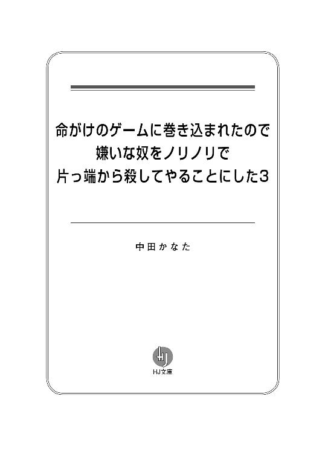
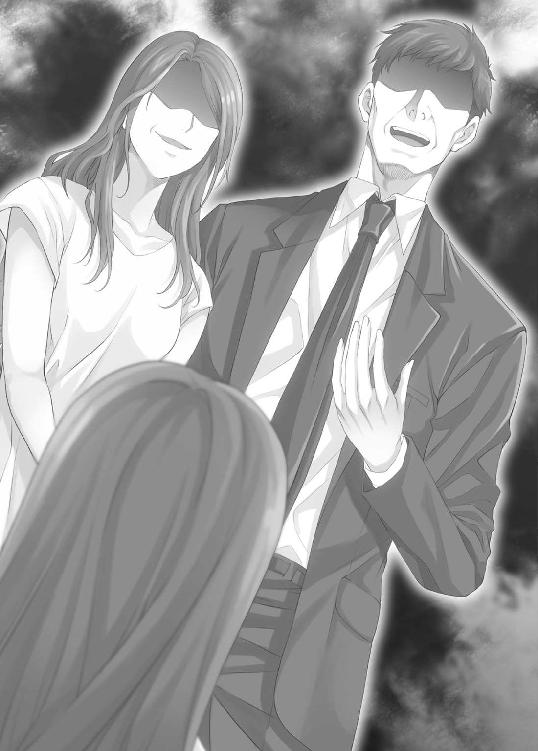
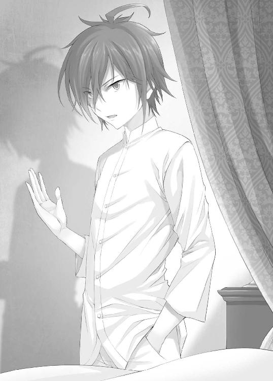

| 命がけのゲームに巻き込まれたので嫌いな奴をノリノリで片っ端から殺してやることにした3 (ＨＪ文庫) | |
| 中田かなた | |
| ホビージャパン (2016) | |



１日目
０
武田ツバサは退屈そうにしている。
そもそも、彼女はこんなゲームには参加したくなかった。
だが、両親が信者となっているこの『良き人々の集い』という宗教団体は規則が厳しいらしく、下手をすれば殺されてしまうこともあるという噂だ。それで仕方なく、彼女は言われるがままにこのゲームに参加することとなった――ということになっている。
すっぱい葡萄。
これが今回行われているゲームの名だ。
全てのチームが何もしなければ、平和裏に終わることの出来るゲーム。
全員が勝者となることの出来るゲーム。
だけど、そんなゲームにこそ罠があるというものだ。
この種のゲームが平和裏に終わるためには、裏切り者が一人も出ないことが必要となる。それはつまり、人数が多くなればなるほど、連携が不足すればするほど難しくなるということだ。ましてや、裏切ることを趣味とするような悪質な人間がいては、不可能とさえ言えるだろう。
さて、今回のゲーム。
一チーム五名、全四チームで行うこのゲームには、二十人の参加者がいる。
この中にそんな人物がいるかというと――。
１
どうしてこんなことになってしまったのでしょうか？
いえ、現実逃避をしている場合じゃありませんね。
私の名前は幸幸子。宗教団体『良き人々の集い』の信者――ではなく、信者を両親に持っただけの人間です。一応名目上は信者ということにはなっていますが、この団体がキリスト教や仏教とは別物の新興宗教だということは理解していますし、私の生活環境が他の人と随分違っているということには自覚があります。
要するに、あまり世間ずれはしていないと自負しております、はい。
さて、そんな私ですが、現在大ピンチです。
突然ですが、私は今『命がけのゲーム』に巻き込まれています。負けたら死んでしまうというか、殺されてしまうというものらしく、私も最初は半信半疑だったのですが、教祖様の話では本当のようです。どうやら、『良き人々の集い』には色々なスポンサーがついていて、その中の一つがすっごくおっかない団体さんだったようなんです。
ええ、ここまで話せばもう想像はつくでしょう。
私はそんなおっかない人たちが主催する『命がけのゲーム』に参加させられているのです。教祖様は『聖なる犠牲』だとか言っていましたが、お金のためであることは分かっています。分かりきっています。
ついでに、邪魔な私を厄介払いしたかったというのもあるかもしれません。
だから、私はなんとしてもこのゲームで生き延びて、教祖様に対して復讐をしたい――殺してやりたいと思っているのです。
ゲームに関してはあまり得意でない私ですが、今回ばかりは強気でいられます。
何故なら、このゲームはチーム戦で行うことになっているのですから。
チームのメンバーは五人。
私は今朝、教祖様の部屋で私以外のメンバーに引き合わされました。
私が呼ばれて教祖様の部屋に行くと、そこにはいつも通りの服装の教祖様がいました。真っ白な和服に、これまた真っ白な頭巾。肌の露出が一切ない特殊な服。いつもならあの服を着せるのは私の仕事だったのですが、今日はその必要はなかったようです。
私は同じく参加者でもある篠原さんから、メンバーの紹介をされました。
まず、鉄山徹子さん。自称演技派女優だそうです。私が暮らしていた『良き人々の集い』の施設にはテレビや雑誌が一切なく、修行のみにあけくれていたため、残念ながらその真偽のほどは分かりません。
二人目が、武田ツバサさん。髪は肩までかかるより少し短い程度で、どことなく中性的な雰囲気を持っている方です。なんというか、不気味な魅力がある人です。この人は両親がこの団体に所属していたことで、この団体の信者ということになっているそうです。何だか、私と境遇が似ていますね。ただ、この人は驚いたことに高校二年生という若さで既に『良き人々の集い』の幹部となっているそうです。名前は聞いたことがあったのですが、実際に見てみるとその若さに驚かされます。
三人目が園田あささん。とても具合が悪そうな人でした。目が悪いのか、視線も定まりませんし、立っているだけで震えていました。本当に、ゲームに参加させてもいいものか、大いに疑問に思いましたがあえて口には出しませんでした。
四人目の篠原志乃さんについては、よく顔を合わせていたので紹介の必要はありませんでした。彼女は三十代の『良き人々の集い』の幹部です。教祖様からは、ゲーム中は彼女の指示に従うように言われています。もっとも、篠原さん自身も鉄山さんから指示を受けることになるのでしょうけれど。
そして、満を持しての五人目――いえ、調子に乗りすぎました。はい、私です。特にこれといったとりえもなく、恥の多い人生を過ごしてきました。きっと、死ぬまでこのまま冴えない人生を歩むことでしょう。
私たちはお互いに軽い自己紹介を済ませると、一階で待っているとある『組織』の車に乗りゲーム会場に向かいました。会場までは目隠しをされていたため、会場がどこにあるのかは想像もつきません。
さて、メンバー紹介も終わったことですし、ここでゲームの説明をしておくことにしましょう。とはいっても、まだ名前しか知らないのですけれど。
ゲームの名前は『すっぱい葡萄』というものでした。
ちなみに『すっぱい葡萄』というのは、かの有名なイソップ寓話の一つであり、あらすじは以下の通りです。
①狐、いい感じの葡萄を見つける。
②食べたいけど届かない。
③「あの葡萄はすっぱいに違いない」と負け惜しみを言って去る。
性格の悪い人が好きそうなお話ですね。
さて、現在私たちは一階のリビングに待機して、ゲームの説明を待っている状態です。まだゲームが始まるまでに時間がありそうなので、ここまでで分かっていることを報告しておきましょう。
まず、このゲームはチーム五人が共同生活をしながら行うもののようです。とある『組織』にゲーム会場まで目隠しをされたまま連れてこられた私たちは、二階建ての建物に誘導されました。もっとも、目隠しを外して把握できたのが一階部分と二階部分だっただけで、実際は十階と十一階だったりする可能性もあります。それを判断しようにも、この建物には外を見渡すことの出来る窓がないので、どうしようもありません。
各人の個室は二階部分にあるようです。具合が悪くなってしまった園田さんは、鉄山さんがあの人に割り当てられた個室まで連れて行きました。
さて、ここまでで分かっていることといえば、これくらいでしょうか。
現在、体調を崩した人以外は全員、一階部分のリビングに集まっています。私たちは皆、黙ってルール説明が始まるのを待っています。ですが、私はその沈黙に耐え切ることが出来ませんでした。
「あの、皆さんはこういうゲームはお得意ですか？」
全員が私に注目します。
アレ？ もしかしたら、ここまで注目されたのは生まれて初めてかもしれません。
「ゲームの内容はよく知らないけれど、勝てる可能性はかなり高いと思うよ」
最初に答えてくれたのは、鉄山さんでした。
その表情からは少しの緊張も窺えません。心強いばかりです。
「ぼくと鉄山がここにいる時点で、負けることはほぼないだろうね」
次に答えてくれたのは、武田さんでした。
この二人の自信はどこから来るのでしょうか？
そういえば、教祖様は今度のゲームについて、外部から助っ人を呼んだと言っていました。武田さんについては元々この『良き人々の集い』の信者であると聞いているので、消去法で鉄山さんがその助っ人ということになるのでしょう。
いずれにしろ、頼れる人がいるのはいいことです。
「私は特に何も」
最後にそう答えたのは、篠原さんでした。いつも通りの無表情。きっと何も考えていないのでしょう。
２
しばらくすると、リビングのテレビの電源が勝手につきました。
そこに現れたのは、一人の年老いた男性。左右に黒服の男が立っています。
男性はしわがれた声で言います。
『さて、定時になったことだし、ゲームを始めるとしよう。私はこのゲームを取り仕切る者。名は『遊戯の翁』とでもしておこう』
「成程。略すと『ゆうぎおう』と読めるね」
武田さんがつぶやきました。
ゆうぎおう？ 一体何のことなのでしょうか？
『さて、このゲームの趣旨についてはプレイヤーの諸君は既に知っているであろうが、ご存じない視聴者の方々もいらっしゃるので、今一度説明させてもらおう。このゲームは、いわば交流会のようなものだ。日本にある四つの新興宗教。『良き人々の集い』『救人会』『星空会』『太陰会』。敬う神も何もかもが異なるこの四つの宗教団体に、交流して（殺しあって）もらおうというのがこのゲームの趣旨だ』
交流会。確かに、私も教祖様からこれが名目だと聞かされています。
ですが、これがただの交流会で済むはずがありません。これは『命がけのゲーム』だとも私は聞かされていますし、誰一人としてこれをただの交流会だと考えている人はいないはずです。思わず頭の中で『交流して』という言葉が『殺しあって』に変換されてしまったほどに明らかなことです。翁はニタリと口元をゆがませます。
『それでは、ゲームルールについて説明をさせてもらおう。これは毎回のことながら『命がけのゲーム』である。全四チームのうち、最大で二チームには死んでもらうことになる』
死ぬのは『最大で』二チーム。
ということは、三チーム、もしかしたら四チーム全てが生き残ることが出来るのかもしれません。もっとも、こういうゲームの主催者にその気はないのでしょうが。
『まず、全チームには『葡萄カード』を六枚ずつ配る。そのうち四枚は『通常葡萄カード』であり、残りの二枚は『すっぱい葡萄カード』である。なお、このカードは電子上で管理されるものであり、実物は用意されていないことに注意されたい』
翁がそう言うと、画面に六枚のカードが表示されました。
そのうち四枚は、背景が黄緑色の『通常葡萄カード』。
残りの二枚は、背景が紫色の『すっぱい葡萄カード』。
葡萄自体は『すっぱい葡萄カード』のほうが少ししなびた感じがしています。
『現在、モニターに六枚のカードが表示されていると思う。プレイヤーには、これを好きなように並び替えてもらう。勿論、このままの順番で並び替えないということも可能だ。それでは一分だけ時間を与えよう』
モニターには残り時間が表示されました。
それと一緒に『画面をタッチしてください』という文字も現れました。どうやら、モニター自体がタッチスクリーンになっているようです。
「あの、どうしますか？」
「適当でいいんじゃないかな？ 並び方なんて現時点では十五通りしかないし、まだ戦略を練ることが出来るような段階じゃないと思うよ」
鉄山さんが言います。武田さんも首肯しました。
残る篠原さんはというと――。
「特に異論はない。適当にやりなさい」
ということだったので、代表して私がカードを並び替えることにしました。
すっぱい葡萄カードは左から二番目と四番目に移動させました。特に意味はありません。ただ、先頭と最後に持ってくるのは何となく気が引けただけです。
残り時間がゼロになると、画面が切り替わりました。
画面は四分割されていて、それぞれに狐Ａ・狐Ｂ・狐Ｃ・狐Ｄという表示がありました。おそらく、これが各チームに付けられた名前なのでしょう。
『さて、それではポイントの説明に移らせてもらおう。各チームには、一日一回だけポイントが与えられる。与えられるポイント数は『通常葡萄カード』から『すっぱい葡萄カード』を引いた数だ。つまり、現状のまま初日を終えると、それぞれのチームに四から二を引いて、二ポイントを与えることになる。それぞれのチームには、このポイントを使って葡萄の取り合いをしてもらうことになる。なお、ポイントを使って出来ることは次の二つだけだ』
モニターに説明文が表示されました。
内容は次の通りです。
ポイントで出来ること
（それぞれ１ポイント）
１．他のチームの葡萄を奪う。
２．自分のチームの葡萄を保護する。
どうやら、ポイントというのは葡萄を奪うために使うもののようです。葡萄を増やしてポイントも増やす。この葡萄の奪い合いがゲームの肝となるようです。正直言って、ここまでは何の意外性もありません。運に頼った普通のゲームです。
だから、私たちはその隣に書かれていた文字に注目していました。
そこに書かれていたのは――。
シークレット
暗証番号を入れると解放されるもの。
内容については知らされない。
『このシークレットというものについても説明しておこう。このシークレット機能は、封印されているものであり、使うためには四桁の暗証番号を入力しなければならない。暗証番号の入力自体は、タブレットを使って行うことが出来る』
「暗証番号......」
四桁というと、００００から９９９９までの一万通りの数字があります。
あてずっぽうで入力していくのは不可能でしょうから、何らかのヒントが途中で示されることになるのでしょう。内容が明かされていないとはいえ、態々暗証番号で保護しているのですから、ゲームを有利に進めることが出来る機能であることは疑いようがありません。
『さて、それではお待ちかね、葡萄の奪い方の説明だ。現在、各チームのカードが裏側が上になった状態で並んでいる画面が壁のモニターに表示されていると思う。そのうち、赤い文字で表示されているチームの画面をタッチしなさい』
言われたとおり、私は『狐Ａ』と書かれた画面をタッチしました。
すると、六枚のカードが表になった状態で表示されました。
先ほど私が並び替えたものが表示されているようです。
『これは自分のチームの持ちカードだ。では『戻る』ボタンをタッチ。その次は別のチームの画面をタッチしなさい』
言われたとおりにすると、今度は六枚のカードが裏側になったまま表示されました。
右上には『狐Ｂ』という表示もあります。
『このうち、一枚カードを選んでタッチしなさい。これは練習であり、カードはどれでも構わない』
適当なカードをタッチすると『奪取リストに登録しますか？ はい・いいえ』という表示が現れました。私はとりあえず『はい』を押します。
『カードの奪い合いは、深夜零時に行われる。『奪取リスト』に登録されたものを自動的に奪うことになるわけだ。この登録は、午後九時で締め切るから、登録する場合はそれまでに済ませておくように。なお、ルールどおり、奪取するためには一ポイントが必要となるわけだが、ここまでで賢明な諸君には二点、疑問が生まれたことだろう』
え、いえ、特にありませんけれど。
私は他の三人を窺います。
「あの、疑問って何だか分かりますか？」
私の問いに、武田さんが答えてくれました。
「ルール上、ポイントの使い方として他チームの葡萄の奪取のほかに、自チームの葡萄の保護というものがあっただろ？ おそらく、保護しておいた葡萄が奪取リストに入っていた場合、奪取を防げるということなんだろうけど、その場合奪取に使ったポイントはどうなるのか、というのが一点だよ」
「もう一点は、二チーム以上が同じカードを奪取リストに入れた場合、優先順位はどうやって決まるのかということだね」
鉄山さんが武田さんに続きました。
この二人、心強すぎます。
『さて、それでは正解発表だ。まず、保護ルールについて。ポイントを使って保護した葡萄カードを奪取しようとした場合、勿論奪取は失敗する。その上、奪取に使用したポイントは失われ、帰ってこない』
「まぁ、妥当なところだね」
鉄山さんが言います。
『次に、二チーム以上が同じカードを奪取しようとした場合。これについては、先にリストに登録したチームが優先される。もう一チームについては、奪取失敗。ただし、この場合については使用したポイントは返ってくる』
ふむふむ成程。分かったような分からないような。
『さて、基本ルールについては以上で終了だ。決着については、五日目の朝の時点での『通常葡萄カード』と『すっぱい葡萄カード』の差によって決まることになる。五日目の朝の時点で生き残っていたら、勝利したと思ってくれて構わない』
「え？」
思わず声が出てしまいました。
『五日目の朝の時点で生き残っていたら勝利』
ということは、敗北が決まったチームは四日目の夜から五日目の朝の間に殺されてしまうということになるのでしょう。だから何だというわけではありませんが、死ぬなら楽に死にたいものです。
『おっと、肝心なことを説明し忘れていた。これだけでは肝心の目的である『交流』がない。君たち四つの団体には、深く話し合い、相互理解を深めて欲しい。それこそ、命がけでだ。そのために、他のチームとは常に通信・対話できるよう設定しておいた。各チームに一つ、タブレットが用意されているだろう。それを操作することで、今見ているモニターを通して他チームと交流できる。また、既に説明したが、シークレット機能の暗証番号の入力もそのタブレットで行ってもらう』
武田さんはテーブルの上に置いてあったタブレットを手に持ちました。すると、さっきまで何も映らなかったタブレットに『通信』などの文字が表示されました。
『ああ、それと午前零時から午前五時までの間は、全員自分の部屋にこもってもらおう。この間に、我々が食料の追加など、必要な用事を済ませておく。特に四日目終了後は『必要な用事』に少し時間がかかってしまうだろう』
翁は再度口元に不気味な笑みを浮かべました。
この発言が意味することなんて一つしかありません。
敗北が決定したプレイヤーを殺す――そのための時間というわけです。
『その五時間は部屋の鍵を強制的に閉めさせてもらうから、部屋から出ることは出来ない。もしも出ている者がいたら、その者は失格とさせてもらう。失格となった者がどうなるかは簡単に想像が付くだろう』
ええ、そうですね。嫌でも付いてしまいます。
『さて、以上でルール説明は終了だ。何か質問があるチームもあるかもしれないが、あったとしても、自分で考えることだ。今以上の情報をこちらから与えることはない。それでは、ゲームスタートだ』
翁がそう言うと、モニターは四分割されたカードの画面に戻りました。
これでゲームスタート？ 心の準備が全く出来ていないのに？
他の人を見ると、武田さんと鉄山さんは平然としていました。こういう事態に慣れているのでしょうか？ そんなわけありませんよね。篠原さんはというと、表情一つ変えずに立っていました。この人は何も考えていないのでしょう。
「さて、それじゃあゲームも始まったことだし、いくつか分析しておくべき情報があるように思えるんだけど、どうかな？」
鉄山さんがそう言ったものの、分析しておくべき情報というものが何なのか、全く想像もつきません。誰も答えられずにいると、鉄山さんは言葉を続けました。
「まず、勝者は何チームとなるのか」
「え？ ああ、はい」
「最大で二チームが敗北ということになる。つまり、三チーム以上は敗北ということにならないということだ。更に言えば、四チーム全てが勝者となることも出来ると解釈できるね」
「そうすれば、誰も死ななくて済むんじゃないですか？」
「そうだね。もっとも、それを望まない人もいるかもしれないけれど」
「望まない人？」
「性格が極端に悪い人だね。他人の不幸を願って止まない人。他人が不幸になることで自分が幸せになれると思い込んでいる人。私の知り合いにも、そういうのがいる。そういうのが、他のチームにいないとも限らないでしょう？」
確かに、そういう人はいると思います。
これは思想の異なる四つの宗教団体の代表戦のようなもの。ならば、このゲームを己の団体の優位を主張するための有効な手段として考えるチームも出てくるかもしれません。
「それに、この状況はいわば『囚人のジレンマ』のようなものなのよ。正確には違う状況だけど、何もしないというのが最善ということが分かっていたとしても、他のチームの裏切りを恐れて他を害する選択をするというのは十分にあり得るわ。というより、おそらくそうなってしまうでしょう」
「そうですね」
「だから、とりあえず今日中に他のチームとは連絡を取っておくことにしよう。怪しいようであれば、身を守る必要があるかもしれない。ここまでに異論のある人はいるかしら？」
全員が無言。異論なしということでしょう。
「それでは、早速はじめることにしよう」
鉄山さんはタブレットを武田さんから受け取り、操作し始めました。正面モニターには『通信申請中』という文字が現れ、少しするとその文字は『狐Ｂ』というものにかわりました。
『はい』
狐Ｂが応対しました。
声にはモザイクがかかっており、相手の年齢も性別もまるっきり分かりません。よほど親しい相手でもない限り、相手が誰なのかは分からないでしょう。
「もしもし、こちら狐Ａです。団体名は『良き人々の集い』です。そちらは狐Ｂでいいですね？」
『ああ、そうだ』
「私は鉄山徹子といいます。そちらは？」
『鉄山徹子？ アンタが？』
「ええ、飛ぶ鳥落とす勢いで大躍進を続けていたら、いつの間にか自分が堕ちてしまっていた世紀の大女優、鉄山徹子とは私のことよ」
『いや、アンタがどこの誰かなんてどうでもいい。俺が誰かなんていうのも重要ではないはずだ。それよりも、交渉をしたくて連絡してきたんじゃないのか？ おそらく、停戦協定の話だろうが』
「察しが良くて助かります」
『こちらもその件で話し合っていたところだ。このゲーム、何もしなければ全チームが生き残ることが出来る。だが、問題はどうやるかだ。常に監視しあうことも出来ないだろう？』
「そうですね。それについてはこれからの検討課題にするとして、とりあえず今日のところはお互いの意志の確認だけして、他のチームとの接触を図ることにしましょう。狐Ｂさんは、お互いに争わずに全チーム全メンバーの生き残りを目指すということでよろしいですか？」
『ああ、賛成だ。そちらは？』
「こちらもそのつもりです。では、これ以降はお互いに協力してゲームに取り組んでいきましょう」
『ああ』
「それでは、失礼します」
鉄山さんは通話をやめました。
これで一歩前進。狐Ｂは最善の道を目指すことへの協力を約束してくれました。
もっとも、本気かどうかは分かりませんけれど。
次に、鉄山さんは狐Ｃに通信を申し込みました。
『はい』
「こんにちは。こちらは狐Ａです。今お時間よろしいですか？」
『ああ、大丈夫だ』
「いきなりですが、お願いがあって連絡を取らせてもらいました。このゲーム、四つのチームが何もしなければ全チームが勝ちあがれる。こちらはそう考えていますが、そちらでの考えはどうですか？」
『その点についてはこちらも同様に考えている』
「では、ご協力いただけませんか？ このまま何もせずに五日目を全員で迎えるために」
『リーダーが上の階に上がってしまっていて不在のため、即答はできない。だが、リーダーに伝えて検討しよう』
「分かりました。よろしくお願いします。では、失礼します」
通信終了。
狐Ｂほど協力的ではありませんでしたが、悪くない感触です。
鉄山さんは休む間もなく、狐Ｄに通信を申し込みます。
『こちら狐Ｄです』
「こちら狐Ａの鉄山です。お話があって連絡させてもらいました」
『話？』
「はい。このゲームを四チーム全てが勝利という形で終わらせるためのお話です」
『聞かせてもらえますか？』
「はい。まず、ルール上勝者の数は限られていませんが、敗者の数は最大でも二つということになっていました。そして、全チームが一位タイということになったら、全チームが勝利となるか敗北となるか、そのどちらかです」
『成程。敗北チームは最大で二つなのだから、自ずと全チーム勝利という結論になるわけですね』
「はい。ですから、まずは全チームがその状況を目指すという共通認識を作っておきたいんです。これは全員が生き残ることが出来るゲーム。それをはっきりさせた上で、どのようにすれば全員が勝利する形に持っていけるかを探りたいんです」
『分かりました。こちらも、全員勝利が可能であるならば、それに越したことはないという考えです。ですが、表立っての協力は出来ません』
「どういうことですか？」
『我々『太陰会』は無為自然を教義としています。決して他人を傷つけることなく、他人に干渉することもされることも極力避けるというのが大まかな内容になります。もしも、貴方たちの目標に対して何らかの積極的な行動が必要になるということでしたら、私たちは協力できかねる部分もでてきてしまうということです』
「そういうことですか。とりあえず、それで構いません。むしろ、私たちの目指す結末のためには、全員にそのような姿勢が必要となります」
『それはよかった。全員が生き残ることを目指すという点については、一応他のメンバーにも了解を取らなければなりませんが、その方向自体に反対する者はいないと思います』
「ありがとうございます」
これで狐Ｄとも通信終了。
状況は驚くほどに順調でした。
３
午後九時になり、葡萄カードを登録できる時間は終了となりました。
もっとも、現時点ではポイントを持っていないことから、葡萄カードを奪うことも保護することも出来ません。
ここまでは平和そのもの。
このまま平和にことが進むのか、それともこれは嵐の前の静けさに過ぎないのか。今の私には分かりませんが、鉄山さん・武田さんという強力な味方がこちらにいる以上、そう簡単に絶望する必要はないのかもしれません。
私たちは、それぞれの個室に戻ることになりました。
一応、午前零時までは部屋に戻らなくてもいいことになっていますし、他の狐との通信はまだ出来ますが、今日のところはもう休もうという武田さんの提案によるものでした。実を言うと、私ももう色々と限界だったので大助かりです。
私は立ち上がりましたが、急に緊張が解けたせいか、足が震えていました。
それを察してくれたのか、鉄山さんは私の部屋まで手を握って誘導してくれました。あれが鉄山さんの地の性格なのか、それとも芸能人としての外面に配慮した結果なのかは分かりませんが、どちらにしろ私にとってはとても安心できる、心強い配慮でした。
「あの、鉄山さん。ありがとうございます」
「お礼はいいよ。当然のことだから」
鉄山さんは屈託のない笑顔で答えてくれました。
その笑顔はとても満足げで満ち足りていて――。
私は――。
４
さてと、それでは皆さん。
演技はここで終了です。
５
笑顔が嫌いです。
満ち足りた笑顔が嫌いです。
私はこの『良き人々の集い』において、お世話係でもあり雑用係でもあります。近場の公園ではよく炊き出しを行うのですが、その仕切りを私は任されています。とはいっても、炊き出しのときは挨拶をするだけであり、調理や配布は他の信者の方々がルーチンワークのように行うことになるので、仕事はないも同然です。
ですが、そのときに気づいてしまったのです。
炊き出しを受け取りに来る人々――その多くは家を失った人々ですが、彼らは炊き出しを受け取り、それを食べた後に満ち足りた表情をするのです。集まった人たちと笑顔で話をしたり、自由気ままに体を動かしたり、多少なりとも人生を楽しんでいる様子が窺えるのです。
その時思ったのです。
これはあってはならないことだと。
これは理不尽で不可思議で不当なことだと。
何故なら、施しを受ける彼らがこれほどまでに幸せそうにしているにもかかわらず、施しをしている私がこうも不幸なのですから。施しというものは、持てるものが持たざるものに与えること。それなのに、何故不幸な人間が少しはましな人間に施しをしなければならないのでしょう。
彼らは私よりも不幸であるべきなのです。
このような笑顔は、許されるべきではありません。
これでは、ただの搾取です。私は搾り取られているだけ。そんなみすぼらしい存在だということになってしまいます。
そんなとき、私は小声でつぶやくのです。
「死ねばいいのに」
誰にも聞こえないように、周りに気をつけながらつぶやくのです。
呪いをかけるようにつぶやくのです。
６
これまで、ずっと私は演じ続けてきました。
行動を演じるのではなく、性格を演じる。これが私の演技でした。
無私を、慈愛を、友愛を、演じ続けていました。
ですが、それも今日までです。
まず、鉄山徹子。
あれはまず間違いなく演技です。世の中にあそこまで性格のいい人間がいるわけがありません。あれが演技でないとしたら、それこそ私の敵ということになります。ああいう優しさが、もし心からのものだったとしたら、それは余裕から来るものなのでしょう。
余裕。
お金の余裕。気持ちの余裕。時間の余裕。
それらが揃って初めて他人に優しく出来るというものです。
あのような不自然であり不合理であり不適切な優しさを発揮することが出来るだなんて、どれだけ恵まれた生活をしてきたのでしょう？ どれだけ幸せなのでしょう？ 私には想像もつきません。
だから、私が言えることはただ一つ。
「死ねばいいのに」
これだけなのです。
次に武田ツバサ。
あの人は、胡散臭いにも程があります。全身から胡散臭さが滲み出しています。その笑顔は不気味ですし、行動も仕草も全てが気持ち悪い。おぞましい。鳥肌が立つ。関わりたくない。近寄りたくない。とにかく、最低です。
だから、私が言えることはただ一つ。
「死ねばいいのに」
これだけなのです。
篠原志乃。
死ねばいいのに。これ以上でもこれ以下でもありません。あれは『良き人々の集い』の幹部ということになっていますが、名ばかりであり、実態としては他人の言うことを聞くだけの役立たずです。他人の言うことを聞いている時点で役には立っているのかもしれませんが、とにかくこの『良き人々の集い』の幹部という立場にたとえ名目上であっても立っているだけで、死に値します。本当に死ねばいいのに。心の底から死ねばいいのに。何が何でも死ねばいいのに。
だから、私が言えることはただ一つ。
「死ねばいいのに」
これだけなのです。
最後に、園田あさ。
うん、特に何もないです。いえ、本当に。さすがの私も見ず知らずの人を批判するだなんてことはしませんよ。そもそも、この『良き人々の集い』の信者になっている時点で十分に不幸なのに、これ以上の不幸を望むだなんてとんでもない。
生きていることが罰ゲーム状態なのです。
むしろ、幸せになってほしいとさえ思います。
だから、私が言えることはただ一つ。
「死ねばいいのに」
これだけなのです。
７
各人に与えられた部屋は、風呂・トイレ・冷蔵庫等完備という夢のような内装のものでした。揃っている寝具などは全て清潔で、汚れ一つありません。ですが、多少おかしな点もあります。その部屋の中は二色で塗り分けられていたのです。すなわち、薄いイエローと薄いブルー。部屋には監視カメラのようなものが取り付けられており、おそらくこの監視カメラが監視できる範囲がイエローとなっているのでしょう。プライバシーへの配慮といったところでしょうか。ちなみに、風呂・トイレについては、当然ながらカメラ自体がついていませんでした。
遊戯の翁が『視聴者』と言っていましたが、やはりコレは見世物としての側面があるのでしょう。おそらく、カメラの向こうにはある程度の人数の視聴者がいるはずです。私の命は今、赤の他人の娯楽の道具として消費されようとしているのです。私の人生なんて、そんなものなのかもしれません。
そんなことを考えながら眠りにつこうとしていたときでした。
突然、部屋中にアラーム音が鳴り響きました。
私は部屋の電気をつけ、廊下に出ました。他の人たちも同じように部屋のドアを開け、廊下に出ていました。少しすると、そのアラーム音は止みました。一体、なんだったのでしょうか？
「あの、これは......」
「さぁ？ 一日の終了の合図かな？」
武田さんが言います。
時計を見ると、午後十時。アラームが鳴るにしては中途半端な時間です。
何かが起きたのかもしれないと思い、私は階段からリビングを見ましたが、特にこれといった変化は見られませんでした。結局、園田さんを除く四人で調査をしてみたものの、何も見つけることは出来ませんでした。
０日目①
１
教団内での私の仕事は、主に教祖様をはじめとした信者たちのお世話でした。食事にしろ、洗濯にしろ、掃除にしろ、その全てに私が関わっていました。私に仕事なんてさせるべきじゃないといってくれた人もいましたが、結局その人が行動に移してくれることはありませんでした。
ええ、最初から期待していませんでしたとも。
どうせ誰も助けてくれないのでしょう。
どうせ誰も犠牲になってくれないのでしょう。
２
高級家具に囲まれた部屋。
教祖様はその部屋でベッドに横になっていました。どうせまともに歩けもしないのだから、家具を高級なものに揃えるだなんて無駄な出費としか思えません。ですが、偉い人なんてこんなものなのでしょう。高級な椅子に座り、高級なご飯を食べて、高級な家具に囲まれる。それがある意味、偉い人の義務なのかもしれません。
私はその部屋に食事を運び込んでいました。
去年から、この部屋に食事を運び込むのは私の仕事になっていました。
教祖様は私に気づくと、声をかけてきました。
「明日からはあのゲームが始まるね」
「ああ、はい」
すっぱい葡萄。
プレイヤーとして登録されていた私には、そのゲームの名前だけが知らされていました。その内容についてはまだ誰も知らないはずです。ですが、所詮はゲーム。お遊戯です。適当に遊んで終わりということになるのでしょう。多少の気晴らしにはなるかもしれませんが、それだけです。
そう考えていると、それを見通したかのように教祖様が言います。
「あのゲームは舐めてかからないほうがいいよ」
「どういう意味でしょう？」
「あれは『命がけのゲーム』だ。これまで、何人も死者が出ている」
「死者？ 聞いたことがありません。それに、本当に死者が出ているようなら、中止されたり廃止されたりするのではないですか？」
「そうじゃないんだよ。内容こそ毎年変わるものの、毎年死者が出ることだけは変わらない。最初から死者が出ることはルールで定められている。死者は出ているが、外部には報告がされていない。そういうことだ。そもそも、あのゲームには私たちのスポンサーになっている『組織』が関わっている。その『組織』が、年に一回こういうゲームを開かせるんだよ」
「つまり、教団の意思でやっているわけではないということですか？」
「そうだ」
「そして、本当に参加したプレイヤーは死んでしまう可能性があると？」
「そうさね。さて、幸幸子。ご苦労だったね。明日に備えて休むがいい。命がけのゲームは明日からだ。お前が生き残れることを願っているよ（とは思っていないよ）。何、心配はないさ。私の世話をしてきたんだ。相当の功徳が積まれているはずだよ。お前ならきっと生き残れるさ（惨めに死んでいくことだろう）」
そう言って、教祖様は体を揺らしながら笑いました。
元から皺だらけの顔には、更に皺が増えています。
「お前は私の世話係なんだ。生きてまた会えることを期待しているよ（邪魔だからさっさと死んでしまいな）」
私はゲームが苦手です。この教団の厳しい規律により、ゲーム性のある娯楽が禁じられていたこともあり、どうしても自分が勝てるイメージがわかないのです。おそらく、私はそのゲームで負けてしまうことでしょう。
私は言います。
「いえ、もうお会いすることは出来ないでしょう」
「そういう根暗で自己評価が低いところを私は評価して（気持ち悪く思って）いるんだけどねぇ」
評価されていてもどうにもならないことはあります。むしろ、それがゲームにおいて何かの役に立つのか問い詰めたいところですが、今更そんなことはしません。
「お食事が終わりましたら、ベッドの横の机に置いておいてください。二時間後に取りにうかがいます」
一礼し、私は部屋を出ました。
私は教祖様の部屋のドアを見つめます。
先ほど言われた言葉。
『命がけのゲーム』
それを聞いたとき、私は絶望などしていませんでした。
死にたいわけでも、勝つ自信があるわけでもありません。
暗い気持ちが全くなかったわけでもありません。
ですが、私の気持ちを占めるのは、別の感情でした。
その気持ちを表すなら――おそらく『安堵』ということになるのでしょう。
２日目
０
二日目の朝。
武田は隣の部屋に行き、話をしていた。
相手はまだ小学生くらいの子供だ。彼女は両親が『良き人々の集い』の信者だったことから、生まれたときからこの団体に所属している。
「これからどうするんですか？」
「さっちゃんは気にしなくて大丈夫だよ。私たちが何とかするから」
武田はいつもどおりの朗らかな笑顔を少女に向ける。
それで気が楽になったのか、少女はほっとした表情を見せた。
初日からずっと不安そうにしていた少女に寄り添い、心理的負担を減らすよう努力する。新井和馬からは悪く言われていた彼女だが、こういうまともな面があることは事実だ。
だが、武田は気づいていない。
その少女の絶望的な表情の裏側には、不信と憤怒と害意が隠されていることを。それに気づくには、武田は人が良すぎた。今後、この少女がどんな役割を果たすのかは、誰にも分からない。全てをひっくり返す可能性もあるし、何も起こさない可能性だってある。
とすると、もう一人の一般信者である老婆にも、何か意味があるのかもしれないが、現時点ではそんなことは重要ではないだろう。
既に問題は起ころうとしているのだ。
狐Ａの誰一人として、その問題には気づいていない。
いや、もしかしたら一人は気づいているのかもしれない。
いずれにせよ、災いの火の粉は既に狐Ａに降りかかろうとしている。
１
翌朝、私が起床してリビングに下りると、ポイント数が二に変わっていました。
通常葡萄が四つ。すっぱい葡萄が二つ。それぞれの葡萄カードの数については変化なしのようで、その差である二がポイントとして入ったようです。
「やあ、おはよう」
「おはようございます」
リビングには鉄山さんがいました。我ながら早起きだったと思いますが、鉄山さんはそれを更に超えた早起きをしていたようです。女優さんというのは、睡眠不足も苦にならないのでしょうか？ 睡眠不足は美容の大敵だと聞いたことがありますが、そのあたりとの整合性が気になるところです。
一体何をしているのか気になり、鉄山さんの手元を見ると、何やら一覧表のようなメモを取っていました。その内容は次の通りです。
２日目
Ａ 通常４ すっぱい２ ２Ｐ所持
Ｂ 通常４ すっぱい２ ２Ｐ所持
Ｃ 通常４ すっぱい２ ２Ｐ所持
Ｄ 通常４ すっぱい２ ２Ｐ所持
「あの、これは何ですか？」
「現状を把握しているのよ」
「他のチームが何かしてくる可能性があるというのですか？」
「普通あるでしょう？」
その言葉に、少しだけ驚いてしまいました。
私の所属している団体は、他人を疑うことを悪徳としていました。
だから、ここまではっきりと他人を疑う人は久しぶりに見た気がします。
「だから、裏切りが生まれないような手段を考えるのよ。幸さんは何か考えてくれたのかな？」
「いえ、まだ特に......」
「それじゃあ、あとで考えることにしよう。でも、とりあえずは朝食の準備でもしようか」
「はい」
私たちは朝食の準備を始めました。
とはいっても、冷蔵庫にあったのは、電子レンジで調理するものばかり。とくにこれといった苦労をすることなく、私たちは朝食の準備を終えました。
「ああ、そういえば、園田さんってどうしたんでしょう」
「まだ起き上がれないかもしれないから、部屋に朝食は私が持っていくわ」
「そうですか」
「とはいっても、冷凍祭りだけどね」
「こういうのは、気持ちが大事なんだと思います。だから、冷凍でも持ってきてもらったという事実が嬉しいんじゃないでしょうか？」
「さすが幸さん。いいことを言うね」
「いえ......」
私たちが食事を終えると、武田さんが下りてきました。
武田さんは眠そうにしながら、流れ作業で食材をレンジでチンしていきました。随分と手際がよく、感心してしまいます。もっとも、冷凍食品をチンする手際をほめられても嬉しくともなんともないでしょうけれど。
「あの、武田さん。おはようございます」
「......おはよう、ございます」
「さっき、鉄山さんと話したんですけど、このゲームは裏切る人がいなければ全員生き残ることができるものです。だから、誰も裏切らないようにする方法を考えようと思うんですけど、何かアイデアはありませんか？」
「裏切らない方法......」
武田さんは視線を浮かせ、少しだけ考え込みました。
その様子を、鉄山さんは面白そうに見ています。特に見ていて面白い仕草ではないと思うのですが、鉄山さんにしか分からない何かがあるのでしょう。
少しすると、武田さんが素晴らしいアイデアを紹介してくれました。
「とりあえず、それぞれに『裏切るべきでない理由』を発表させたらどうかと思うんだ」
「理由ですか？」
「たとえ裏切るつもりの人間でも、裏切るべきでない理由を自分で考えて、自分で話すことで、裏切る気を削ぐことが出来ると思うんだ。だから、とりあえず他のチームにもその理由を考えるように伝えてみるといいと思うよ」
「でも、応じてくれるでしょうか？」
「それは心配ないよ。ゲームはまだ始まったばかり。現時点ではまだ体裁を気にして乗ってきてくれるはず。腹の底に何を抱えていたとしても、いや、抱えていたほうがより熱心に理由を考えてくれるだろう」
武田さんは悪い顔をして言いました。
思わず、私はのけぞって転びそうになってしまいました。隣にいた鉄山さんが支えてくれたので大事には至りませんでしたけれど。
「おっと、つい地が出てしまいそうになったよ」
武田さんが言います。
鉄山さんはそんな武田さんに対してもフォローを入れます。
「武田さんは、普段はいい人だから（本性は最悪だけど）、気にしなくていいよ。多少ブラックなところはあっても、それがまた魅力だ（ということにしてこの場を収めたほうがいい）よね」
「面白い（嫌みったらしい）ことを言ってくれるね、鉄山さんは」
二人は和やかに笑いあいました。
何故か、二人の間には対立めいたものを感じてしまいます。
それからしばらくは、テレビを見ながら談笑していました。
教団内ではテレビの視聴が禁じられていたので、どの番組も非常に興味深く思えます。
そうしているうちに、篠原さんが下りてきました。
「おはようございます」
「あ、おはようございます」
時刻は午前九時。
起きる時間としては、やや遅いように思えます。
「幸さん、随分と早いな」
「いえ、普通だと思いますけど」
「そうか。ところで、ここにいる三名のうち二名は『良き人々の集い』の信者だったと記憶しているが、まさか朝の祈りの時間を忘れたわけではあるまいな」
「「あ」」
二人分の声が重なりました。
そういえばありましたね、そういうの。私はお世話係の仕事があり、適当な理由を付けて免除されていたからすっかり忘れていました。お世話係から解放された今、私も朝のお祈りはしなければならなかったのかもしれません。
もっとも、それでもやる気はありませんけれど。
「それは置いておくとして、ゲームは順調なようだな」
「ああ、そうだね」
武田さんが答えます。
「とはいっても、現時点でプレイヤーが起こせる行動なんて一つもなかったんだから当然だよね。そんなことは言わなくても、篠原さんなら分かっていると思うけど（そんなことにも気づかなかったの？）」
幹部に対してこうも自然に振舞えるのは、武田さんもまた幹部だからなのでしょう。十七歳でこの団体の幹部になるなんてことは異例中の異例。武田ツバサ。この人は一体どのような人なのでしょうか。興味は尽きません。
「篠原さん。朝食はどうしますか？」
「私は普段から朝食をとらない。だが、気遣いありがとう（と一応言っておこう）。それよりも、ゲームについて話を続けよう」
「はい」
それからしばらくの間、私たちはゲームについて話し合いました。
そして、議論が行き詰った頃に、武田さんが言いました。
「そろそろ他のチームに連絡してもいいかな？ さっきの提案を他のチームに伝えてみたいんだけど」
「ああ、そうだね。それがいいと思うわ」
「そうだな」
武田さんの提案に、鉄山さんと篠原さんが賛成しました。
私？ 勿論賛成です。
そう言おうとしたら、他のチームから通信が入ってしまいました。
武田さんがタッチして応対します。
「はいはい。こちら、狐Ａ」
『おはよう、こちらは狐Ｂだ。今日は提案をさせてもらいたい（君たちを騙したい）』
「（騙すつもりなんだろうけど）聞かせてもらう」
『実はチームを組んでもらいたい』
「チーム？」
『このゲーム、おそらく先に手を出した団体が有利になる。その理由は分かるか？』
「ああ、そうだね。はっきり言って、このゲームは最初の一手で全てが決まるといっていい。無防備な相手から葡萄カードを奪った場合、六分の四の確率で通常葡萄が手に入る。そうなると、後はポイントを自分のチームの通常葡萄カードの保護に使っているだけで、高確率で勝てる」
『そうだ。だから、チームを組む目的の一つはお互いにそれをしないようにすること。そして、俺たちがチームを組むことにはもう一つ目的がある。それは、お互いに別の組と個別にチームを組んで、他の組の行動を誘導することだ』
「誘導なんて出来るんですか？」
私は思わず尋ねました。
『勿論、完全な誘導は無理だ。でも、不用意な裏切りを防止することにはある程度の効果があると思う。このゲームは、戦略云々よりも、誰もが疑心暗鬼になりそうな状況下で、全員が協力できるかどうかが問題となっている。宗教団体同士のゲームとしては、いいセンスだ』
「分かった。受け（たふりをし）よう」
武田さんが答えました。
「こちらはＣとＤのどちらに接触すればいいんだい？」
『狐Ｃを任せたい』
「分かった。それでは、適宜連絡を取り合おう」
『ああ。それじゃあ、失礼する』
通信終了。
狐Ｂは、少なくとも私には友好的だと思えました。全員生き残る。どうせ無理だろうと思っていましたが、その結果は少し現実味を帯びてきたように思えます。
だから、その逆が正解なのでしょう。
全員生き残ることは不可能。
その前提で狐Ｂは話している。そう考えるべきなのです。
私以外にもそう考える人がいたようです。
「確認したいんだが、この中に狐Ｂを信じていいと思う者はいるか？」
篠原さんが問いかけます。
私は恐る恐る手を挙げました。
現時点で狐Ｂを疑う理由は一つもない――そう思い込んでいる振りをするためです。
ですが、挙手をしたのは私一人だけという結果になってしまいました。皆さん現実的ですね。
「さて、それでは今後の行動指針を話し合おう。私としては、先制攻撃を行うべきだと思う」
「ちょっと待ってください。どうしてそうなるんですか（議論の必要もないほどに当然のことですよね）？ 狐Ｂの人は、誠実そうに（胡散臭いように）思えましたけど」
「少し黙っていてくれ。君には聞いていない」
分かっていますよ、この馬鹿女。
篠原さんが冷たく言い放ったことで、鉄山さんが解説をしてくれました。
「言っていることがめちゃくちゃだったのよ、あの人。このゲームについて、何て言っていたか覚えてる？」
「確か、宗教団体同士のゲームとしては適切だとか」
「そのちょっと前ね。このゲームは、戦略よりも疑心暗鬼になりがちな状況下で全員が協力できるかどうかが問われているって言っていたでしょう？ そんなことを言いつつ、ちゃっかり他の組を一方的に操るための戦略を私たちに提案してきた」
「でも、それだけで決め付けるのはよくないと思います（人を信じないのに理由は要りませんよね）」
「理想論に命をかけることは出来ないわ」
「それは、そうですけど......」
鉄山さんが言っていることは正しい。
それは理解できます。
ですが、私は信じたい――と思っているふりをすることにしました。
すると、思わぬところから助け舟が来ました。
ただし、泥舟でしたけど。
「信じてみればいいんじゃないかな？」
武田さんが言いました。
それを聞いた鉄山さんは、信じられない言葉でも聞いたかのように大げさに驚いていました。武田さんは『良き人々の集い』の信者なのですから、人を信じるのは当然のはずです。もっとも、私は信じていませんけれど。
「じ、自分が何を言っているか分かっているの？」
「勿論だよ。狐Ｂの人も言っていたじゃないか。これは信頼を試すゲームなんだよ。仮に裏切られたとしても、ぼくたちは人を信じるべきだ（意味不明・理解不能）」
「え、いや、武田の立場からはそう言えなくもないのは理解できるんだけど（何を言っているんだ、この馬鹿は）」
「それじゃあ、協力する方向で話を進めよう。『良き人々の集い』の理念とは、人間相互間の『信頼』に他ならない。ここで、他の三団体にぼくたちの信頼を見せ付けてあげようじゃないか。ぼくたちは迷わない。ぼくたちは信じる。たとえそれで裏切られようともね（意味不明・理解不能）」
私は思わず拍手してしまいました。
せざるを得ませんでした。
武田ツバサ。ここまで心のこもっていない空言を言える人なんて滅多にいません。
さすがは宗教団体の幹部といったところでしょうか。
「分かったわ。それじゃあ、とりあえず結論は保留させておきましょう」
「そうだな。また何か思いついたらここに集まろう」
鉄山さんと篠原さんは、武田さんの意見が予想外だったのか少しあせっているように見えました。
そのときです。
私の頭に突然のひらめきが生じました。
「......あの、すいません」
「何だ？」
私がおずおず手を挙げると、篠原さんが反応しました。
「作戦を考えたんですけど」
「一応、聞こうか」
「あの、現状は全チームが毎日二ポイントを得ることが出来るということになっていますよね？ だから、次からはずっとそのポイントを『通常葡萄カード』の保護に使うという協定を結べばいいのだと思います」
「どういうことだ？」
「もしこの協定を破って強奪をしようとした場合、保護されたものを選択すればポイントを浪費するだけであり、そうでなかったとしても『通常葡萄カード』を強奪できる可能性は五十パーセントしかない。その可能性にかけるよりも、皆で安全を目指したほうがいい。これって、理由になりませんか？」
「理由？」
「裏切らないほうがいい理由です。武田さんがさっき言っていた」
「ああ」
篠原さんはあいまいな返事をします。
「素晴らしい。素晴らしいアイデアだ。さすがはさっちゃんだね（どうでもいい）」
武田さんが表面上は絶賛してくれました。
駄目ですね、コレ。心の底では馬鹿にしているパターンです。
ちなみに『さっちゃん』とは私のことです。私の名前が幸子であることから武田さんは、昨晩アラームの原因を探っている最中に、私のことを童謡にちなんで『さっちゃん』と呼びました。その時はただ呼んでみただけなのでしょうが、私があまりいい顔をしなかったところ、その呼び方が定着してしまいました。天邪鬼にもほどがあります。
「是非とも、今すぐ他のチームに伝えようじゃないか。これを伝えることで、我々に争う意思がないことを分かってもらえるだろう（特に意味はないだろうけど）」
意外なことに、それから先は順調でした。武田さんは他の団体に私の提案を伝えてくれ、他の団体からは了承を得ることが出来ました。
誰が何を企んでいるのかは分かりませんが、私のアイデアはそれぞれの企みの邪魔にはならなかったようです。
２
状況が悪化したのは、夕方になってからでした。
私たちが何となくリビングに集まっていると、突然狐Ｃから通信が入ったのです。
たまたまタブレットが近くにあった私が通話ボタンを押します。
「はい、こちら狐Ａです」
『やぁ、コンニチハ。もうコンバンハと言ったほうがいいのかな？ 外の様子が分からないと挨拶もしにくいものだね』
「こちらとしては、どちらでも構いませんけれど」
『全員揃っていますか？ 話をしたいことがあるのですが』
「一人体調不良のため休んでいますが、他の四人はいます」
『それならそれで構いません。少しお話をさせてもらいたいのですが、構いませんか？』
「え、ええ」
私は後ろの皆さんを窺いました。全員が首肯してくれました。
「分かりました。構いません」
『では、話をさせてもらいますね』
狐Ｃの人はそういうと少し間を空けて、とんでもない発言をしました。
『狐Ｃは、全ての団体に対して宣戦布告をする！』
「......え？」
『なお、こちらも名前を明かしておこう。俺の名は、新井和馬だ！ 俺のことを知っている奴もいるだろうから言っておくが、俺はゲームに関しては絶対に負けない。ましてや、お前たちのような、教団にすら捨てられたゴミクズどもに負ける可能性など万に一つもない！』
「待て！ それは聞き捨てならないぞ」
篠原さんが言います。
「他の団体ならともかく、我々『良き人々の集い』は教団幹部を二人もこのゲームに参加させている。これはゲームに勝利するためであって、決していらない者を捨てたわけではない！」
教祖様がそう言っていたんですね、はい。分かります。
篠原さんというのはそういう人なのです。自分の考えを持たず、教祖様の考え――しかもその表面的で綺麗ごとの部分にのみ従おうとする人。だから、こんな状況下でも教祖様の言葉を一切疑っていないのでしょう。
『アンタ、誰だ？』
「『良き人々の集い』の幹部である篠原だ」
『そうか、篠原とやら。随分と幸せな脳みそをしているようだが、お前国語の成績悪かっただろ？ 登場人物の心情とか一切分からなかっただろ？ いるよな、お前みたいな独善的で孤立する馬鹿。友達いるか？ いないよなぁ。どうせ教祖からも疎まれていたんだろ？ だからこんなゲームに参加させられているんだろ？』
「そんなことはない！」
『あ～る～ん～だ～よ～！』
新井さんを名乗る人は断言しました。
申し訳ないですが（当然ながら）、私も彼と同じ意見です。
『本当に分かっていないのか？ それとも、認めたくないから惨めに従順な振りをしているだけなのか？ 少しは自分の頭で考えろよバーカ。もっとも、考えたところで無駄だけどな。どうせお前はここで死ぬんだ。このゲームに負けて、ここで死ぬ。教祖に裏切られたことを自覚したとき、お前はどんな顔をするんだろうなぁ！ モニターで相手チームの様子が見られないのが本当に残念だ！』
「あ......」
篠原さんが言葉に詰まってしまいました。
そんな姿を見ていた鉄山さんは、新井さんに向かって語りかけます。
「やぁ、新井君。久しぶりだね」
『......誰だ？』
「誰だとは失礼だね。私の声を忘れたのかな？ おっと、声にモザイクがかかるから分からなくて当然か。私は鉄山徹子。新井和馬の天敵とも言える大女優だよ」
『鉄山徹子......だと！ 本当か！』
「本当だとも。一緒に電脳ランドや幻影島で遊んだ仲じゃない」
『そうか。それは良かった！ これでお前を殺せる！ ゲーム世界ではない、本物の世界でお前の生命を終わらせることが出来る！ 鉄山徹子！ お前のおかげでこの下らないゲームに大きな意味が出来た！ 感謝するぞ！ そして、宣言してやる！ お前はこの手で殺して殺して殺しつくしてやる!!』
「それはどうも。出来るものならやってみるといいよ。ところで、さっきから散々私たちのことを馬鹿にしていたみたいだけど、そういう新井君はどうなのかな？ 教団に捨てられちゃったんじゃないのかな？ というか、どういう経緯で宗教団体になんて入ったの？ 絶対に神様とか信じない性格でしょ、君は」
『助っ人だ。どうせお前も同じだろう！ こういう、他人を不幸に陥れることができる機会には是非とも参加しておかなければならないという崇高な使命感に駆られて参加をすることにしたんだ』
「へぇ。それじゃあ、お手柔らかに頼むよ」
『お断りだぁ！ さて、下らない人間同士の下らない会話はここまでだ。下らない命がけのゲームに巻き込まれた棄民どもに言っておこう。これより、お前たちクズどもをノリノリで片っ端から殺してやることにしたから、覚悟しておけ！』
新井さんは勢いよく言いました。
声にモザイクがかかっていてもノリノリなのが分かります。
『まず手始めに、今夜お前たちから葡萄を奪ってやる！ 現在、全チームが『通常葡萄カード』を四枚ずつ持っているはずだ。そのうち二枚が奪われたらそのチームにはポイントが入らなくなり、事実上敗者となる！ それが嫌ならポイントを使って防御するがいい！ それじゃあ、明日の発表を楽しみにしていろ！』
新井和馬と名乗った人物は、そう言って通信を終了しました。
私たちは沈黙するばかりでした。
「あ、あの、どうしましょう？」
私は頼れる二人を見ました。
その二人はというと――。
「とりあえず、食事にしようか」
「ああ、そうだね」
何故か、何事もなかったかのように、夕食の準備を始めました。
「あの、今のに何か対応しなくていいんですか？」
「別にいいと思うよ」
鉄山さんが答えます。
「だって、今の偽者だし」
「偽者？ あの、新井和馬さんのお知り合いなんですか？」
「うん、そう。一応ね」
「だから話し方とかで偽者だって分かるんですか？」
「いいや、違うよ」
今度は武田さんが答えてくれました。
「何故分かるかというとね、彼は既に死んでいるからだよ」
武田さんは、その事実を何てことないように言いました。
私はその新井和馬という人を見たことがありません。以前、テレビで醜態をさらしたことで日本中から非難されたことがあるというのは聞いたことがありますが、それだけです。この娯楽や情報が極端に制限された教団内では、外部の情報を手に入れることは非常に困難なのです。
「そこにいる鉄山さんが殺したんだ。彼女は警察から逃げているんだけど、その過程でここに匿われることになったんだ。演技派中の演技派。演技というよりは変身とまで言われた日本でも最高クラスの女優が堕ちたものだよね。もっとも、彼女の犯した罪についてはぼくも多少は関わっているんだけど」
武田さんは愉快そうに笑いました。
それに対して鉄山さんはというと――。
「酷いことを言うわね。あんなの死んで当然よ。私がやらなくてもいつか誰かに殺されていたわ」
「かもしれないね」
私は幹部の篠原さんを見ます。
すると、篠原さんは二人に向かって呼びかけました。
「問題はそこではないのでは？」
「というと？」
「先ほどの人物が新井和馬かどうかなんて、どうでもいいことなのではないか？ 重要なのは、狐Ｃが敵意を持っていて、それを宣言してきたということ。これで、ゲームは無事には終わらなくなってしまった」
「ああ、そうかもしれない」
「何故危機感がないのだ？」
「この挑発がハッタリだと考えているからだよ」
武田さんが答えます。
「ハッタリ？」
「そもそも、本当に『葡萄カード』を奪いたいのなら、宣言なんかしないで表向きは仲良くしつつ、隠れて最終日に奪ってしまえばよかった。でも、この自称新井和馬はそれを宣言している。その意図として考えられる可能性は一つ」
「それって――」
「他のチームに『葡萄カード』を保護させることで、ポイントを消費させること」
「いや、でも毎回二ポイントは入るわけですし、カードを保護していれば意味ないんじゃないですか？」
「そうでもないよ。このゲームには、まだまだぼく達が把握できていない部分があるだろう？」
「もしかして、シークレットのことですか？」
「例えば、シークレット機能の内容が『保護機能を突破する』というのだったらどうかな？ 使用にはポイントが二以上必要になると考えれば、今回の状況にも説明がつくと思うよ」
「こちらが保護にポイントをまわすことで、自分が攻撃されないようにする。それが目的ということですか」
「シークレット機能の内容がそうであれば、それで間違いないと思う。というより、それくらいしか追加ルールは思いつかないよ」
「でも、狐Ｃはどうやってシークレット機能を解除したんですか？」
「それはまだ分からない。でも、何らかのヒントはあったんじゃないかな？ 推理小説などに出てくる暗号やパスワードというものは、大体の場合が気づいてしまえば簡単なものばかりだからね。所謂『ぼくは馬鹿だ。どうしてこんな簡単なことに気づかなかったんだ』というやつだよ」
成程。
『ぼくは馬鹿だ。どうしてこんな簡単なことに気づかなかったんだ（意識の盲点を突く素晴らしいトリックを考えた作者である私を褒め称えてください）』
というやつですか。
おっと、ついつい翻訳してしまいました。
「とにかく、今はパスワードを見つけて、シークレット機能を解除することを目指そう」
「分かりました」
３
結局、夜になってもパスワードは見つかりませんでした。
途中、狐Ｂから通信が入りましたが、あちらもパスワードについてはまだ何も分かっていないそうです。もっとも、それが事実かどうかは分かりませんが。
体調不良の園田さんを除いて、全員でリビングに集まると、武田さんが提案をしました。
「さて、現時点でシークレット機能の解除が出来ていない以上、対策を考える必要がある。ただ、シークレット機能の内容としては、さっき話したとおり、保護機能の突破だと思う。ここまでで異論のある人はいるかな？」
誰も口を出しませんでした。
「全員賛成と取らせてもらうよ。それじゃあ、提案だ。いっそのこと、こちらから攻めてみてはどうだろう？ 狐Ｃは、シークレット機能を使うために、ポイントを温存しているはずだ。つまり、今夜は保護にポイントをまわさないということになる。このタイミングで、攻め込めば『通常葡萄カード』を高い確率で奪取できる。しかも、奪取に成功すれば、狐Ｃが得られるポイントも減り、シークレット機能を使うことも出来なくなる」
「私は賛成です」
「私も」
「いいと思うぞ」
今回ばかりは、全会一致で賛成となりました。
武田さんは、タブレットを使って奪取するカードを登録しています。
さて、この作戦が吉と出るか凶と出るか。
それは明日の朝にならないと、誰にも分かりません。
いえ、もしかしたら、分かっている人がいるのかもしれませんが。
「それじゃあ、今日のところは解散でいいかな？」
「いや、その前に気になることがあるんだけど」
鉄山さんが言いました。
「狐Ｄって今、どうしているのかな？ 昨日は無為自然がどうこう言っていたけれど、今日になって気が変ったりしていないかな？ 狐Ｃがこんな宣言をしたことで、あちらも他の狐に対して攻撃を仕掛けようと考えているんじゃないかな？ この期に及んで本当に何もしようとしないとは思えないのよ」
「ああ、そうだね。それじゃあ、一応確認しておこうか」
武田さんはタブレットで通話を申し込みます。
『狐Ｄです』
「こちらは狐Ａです。今後の方針について聞かせてもらおうと思って通信を申し込みました」
『方針ですか？』
「こうなった以上、全員で生き残ることは不可能です。だから、攻め込むなり守るなりをする必要があると思うのですが、狐Ｄの方針を伺いたい」
『そうですねぇ。方針といわれましても、こちらとしては特にありません』
「......え？」
『前回も申し上げましたが、我々『太陰会』の教義は『無為自然』です。我々は攻めることも守ることもしません』
「いや、何を言っているんですか？ このままだと葡萄を取られて死んでしまいますよ」
『それならそれで仕方がないことです。我々にとって、自分の手で他人を殺すことは何よりの禁忌とされています。忌避すべき事柄です。それを守るためであれば、自らの命さえ捨てることも辞しません』
「それは......。まぁ、なんと言うか。ご立派な姿勢（頭おかしい）ですね」
『ありがとうございます』
さすがの武田さんも、この姿勢は予想外だったようです。
私達全員が、その態度に呆気に取られてしまいました。
命がけのゲームに参加しながらも何もしない。
それは中々出来ないことです。というか、だったら最初から参加しなければいいのに、と思うのですが、そういうわけにも行かないのでしょう。どうせ私たちと同じように強制参加させられているに違いありません。
『それでは、御用はそれだけでしょうか？』
「あ、はい」
『ではこれで失礼いたします。瞑想の最中ですので』
そう言って狐Ｄは通信を切りました。
私たちは狐Ｄの迷いのない姿勢に、しばらくの間言葉も出ませんでした。
ですが、いつまでもそうしているわけには行きません。
私は武田さんに尋ねます。
「あの、狐Ｄはどうします？」
「どうしようもないね。狐Ｄは放置するしかない。味方にならなくても敵にもならない。そういう解釈でいいと思うよ、今のところは。何かをしても調べればある程度は分かるだろうし」
武田さんはそう言ってタブレットを置きました。
「それじゃあ、今度こそ解散だ。明日の朝になって結果を確認して、その上でまた方針を話し合おう」
こうして、ゲーム二日目は終わりました。
部屋に戻った私は、今日の出来事について思いをめぐらせます。
突如現れた新井和馬という人物。
おそらく、このゲームで生き残れるかどうかは彼に対してどう対処するかで決まってくることになるのでしょう。武田さんと鉄山さんの存在は心強くはありますが、果たして二人に頼っているだけでいいのでしょうか？
この狐Ａは、武田さんのワンマンチームです。鉄山さんが多少のフォローをすることもありますが、見落としがないとも限りません。何か大きな見落とし――。そんなものがあるのかどうかは、おそらく明日になれば分かるでしょう。
０日目②
３
午後八時丁度。
私は教祖様の部屋のドアをノックしました。
返事がないので、私は一言『入ります』と言ってから、静かにドアを開けて部屋の中に入りました。最近、教祖様は体力の低下のためか、午後八時前に就寝することが多いようで、今日も教祖様はベッドで横になっていました。
私はゆっくりと近づき、教祖様の顔色を確認し、布団をかけてさしあげました。
食器はテーブルの近くに散乱していました。おそらく、ベッドまで移動する際に落としてしまったのでしょうが、教祖様はあまり気にしていないと思います。
こういう場合のためのお世話係。こういうことは何度もありました。私は食器を拾い集め、残飯となってしまった料理も空き皿の上に載せました。量からすると、半分ほど残してしまったようです。最近は食欲も衰退してきているようでしたが、以前診ていただいた医者の先生の見立てでは、まだまだしばらくは健康に生きることができるということでした。
一階にある台所で、私は残した食事を処理し、食器を洗います。
そして、この事務所で暮らしている信者さんのために、明日の食事の仕込みを始めました。おそらく、これが私が信者さんのために作る最後の食事ということになるのでしょう。食事の作り方をまとめたノートも置いておきましたが、はたしてどれだけ活用してくれるでしょうか。私の予想では、精々一回か二回程度なのではないかと思います。
いずれにしろ、私は明日ゲームに狩りだされます。
生き残ることは難しいと思います。
それでも、私は穏やかな気持ちで床に就きました。
今日と明日は、私の人生においてもっとも重要な日となるはずです。
３日目
０
救人会。
文字通り人を救う会である。ここ十年くらいで急激に信者を増やしてきた宗教で、信者に勧誘活動を積極的にさせていることで有名となっている。他人を救人会に誘い入信させることが神への奉仕となり、自分が誘った信者が他のものを入信させた場合もまた神への奉仕が行われたことになる。そんなねずみ講じみた理念がその大元にはある。
救人会は現在、狐Ｃとして活動している。
新井和馬を名乗る不届き者。
自ら地に落ちようという落伍者。
そういう存在が、狐Ｃの中にはいた。
「何か面白い発見でもありましたかな？」
これはモニターから発せられる声ではない。
この『私』に直接かけられた声だ。
私は今、ホテルの会議室のような部屋で、複数のモニターを同時に見ていた。
そして、私の目の前には、救人会の教祖が現れた。彼はまだ壮年とでもいうべき年齢で、とても教祖という立場にいるとは思えないほどに若々しかった。彼は私の隣に座ると、モニターを覗き込む。このモニターは、一部の例外はあるものの、全組の全部屋を監視できるものだ。
「随分と朝が早いんですね。貴女は確か『良き人々の集い』の教祖様でしたよね？」
「信者を見守ることこそ教祖の役割」
本心からそう思っているわけではないが、私は適当に思いうかんだ言葉を告げた。
男はニッコリと胡散臭い笑みを浮かべて応じる。
「ところで、あの『新井和馬』という男。どこで拾ってきた？」
「おや、彼に興味がおありですか？ よろしければ、ゲームが終わった後にでも面談させましょうか？」
「もしも勝ち残っていたら頼もうか」
「おそらく、彼の勝ちは確定しているものと思いますよ。何せ、この状況ですからね」
男はそう言って、葡萄の一覧を指差した。
困ったことに、狐Ｃの宣言はハッタリではなかった。
狐Ｃは宣言どおり、他の狐から葡萄を奪っていた。
しかも、その方法が常軌を逸している。
非常に不愉快だ。
それを知ってか、男がニヤついたまま私の隣に座ったので、私は席を立つ。
それぞれの団体の教祖に対しては、ホテルのスイートルームが用意されていた。この部屋に備え付けられたテレビでも、ゲームの様子を見ることは出来る。複数のモニターを同時に表示させることは出来ないが、あの男の隣に座っているのに耐えられそうになかった。私は特殊な構造の服に苦労しながらも軽装に着替え、テレビの電源をつけて、ゲームの様子を見る。
狐Ｃはどうやらこれから攻勢を強める様子だ。これ以上やるというのは、やりすぎとしか思えないのだが、狐Ｃにいるのはそういう男なのだ。
一方で、私の団体である『良き人々の集い』の面々はというと――。
１
翌朝、私は午前五時丁度に部屋を出ました。
昨日の結果が気になって仕方がないのです。
モニターには、狐Ａのポイントとして０という数字が書かれていました。
葡萄を確認すると、通常が３、すっぱい葡萄が３となっていました。
つまり、これは――。
「奪われているじゃないですか！」
そう。私たちは、まんまと『通常葡萄カード』を奪われたのです。
さらに、二ポイントを費やしたこちらからの攻撃は、一ポイント分は保護に阻まれた上に、もう一ポイント分は『すっぱい葡萄カード』を掴まされてしまうという残念な結果に終わってしまいました。
「これで、もうポイントは得られないね」
「わっ」
いつの間にか、背後に鉄山さんがいました。
鉄山さんは、困ったような顔をしてモニターを見ています。
「あの、鉄山さん」
「おはよう。とりあえず、朝食にしようか」
「え、あの......」
鉄山さんは食パンをトースターにいれ、冷蔵庫からバターを取り出しました。
その様子はあまりにも自然で、何の動揺もしていないように見えてしまいます。
まさか、この鉄山さん、自分の命なんてどうでもいいだなんて思っているんじゃないでしょうか。確か、この人は新井和馬という人を殺して逃亡中の身という話でした。自暴自棄になっていても不思議はありません。
一応、私はゲームについて聞いてみることにしました。
「あの、ゲームはどうしますか？」
「考えても無駄ね。こうなった以上、私たちはもう手も足も出ないわ。出来ることがあるとすれば、シークレット機能を解除することくらいのものね」
「はぁ」
「だから、今はとりあえず朝食の準備よ。さっさと済ませて、あとは部屋に引き篭もっちゃいましょう。武田ならともかく、篠原さんがこれを見たらうるさいわよ。お祈りの時間がどうこう言っていたから、今日も下りてくるのは遅くなるでしょうけど」
「は、はい。でも、鉄山さんはどうして冷静なんですか？」
「一つは、シークレット機能がまだ解除されていないからかな。あれが解除されれば、この状況下でもまともに戦えるような気がするの（と思わないとやってられないわ）。私の勘なんだけどね」
「勘ですか」
「もう一つは、私と武田かな。今の状況を見ると、絶体絶命の絶望的状況のようにも思えるけれど、たかが絶体絶命の絶望的状況くらい、私と武田が組めば何とでもなると思えるのよね（なので諦めているわ）」
「そうですか......」
正直言って、もうあまり信用できません。
最初はこれ以上ないというくらいに信頼していたのですが、今となっては発言内容がただのハッタリにしか思えないのです。何か行動を起こすためにはポイントが必要。そのポイントは今後入ってこないであろうという状況。もしかしたら、鉄山さんの発言はただの現実逃避でしかないのではないでしょうか。
「疑っているね」
「そんなことはないですよ（はい、勿論疑っています）」
「ところで、少し聞いていいかな？」
「何でしょう？」
「よく刃物で何かを切るときに『バターのようにさっくり切れる』って言って、切れ味やら切りやすさを表現することがあるけど、冷蔵庫から出したバターってそこそこ硬いと思うのよ。ということは、ああいう人たちってバターを常温で保存していたりするのかしら？ どう思う？」
「それが今お話しすべき内容なのか疑問に思います」
「ああ、うん。それもそうね」
鉄山さんはなんてことないように言いました。
そんな鉄山さんに、私は少し前から気になっていたことを聞いてみることにしました。
「あの、鉄山さん。鉄山さんって何でこのゲームに参加することになったんですか？」
「え？」
「だって。鉄山さんはこんなものに関わるような人とは思えません。何ていうか、まともすぎるほどにまともな人だと思うんです」
私が言うと、鉄山さんは少しだけ考え込みました。
そして、私の問いに答えてくれました。
「実はね、私落ちぶれちゃったのよ」
「落ちぶれた？」
「孤島でやる大規模ゲームに参加したんだけどね、そこで例の新井和馬君を酷い目にあわせようとしたら、武田に妨害されて悪者扱いされるようになっちゃったわけ。それで、仕事が激減。憎き武田からのオファーまで受けざるを得なくなってしまったというわけね」
「え？ 仕事？ 逃亡中じゃなかったんですか？」
「ああ、あれは半分冗談みたいなものよ。逃亡なんてしていないわ」
「そうだったんですか」
「死体はちゃんと隠したからね。その辺は武田が手配してくれたのよ。貴女たち『良き人々の集い』の力を借りたの。そうでもなければ、私のような大女優がこんなゲームに参加するわけがないでしょう？」
「そ、そうだったんですか」
この人、訳が分かりません。何が嘘で何が本当なのか。卓越した演技力で分からないようにしてしまっているのでしょうか。今まで一度もこんなことはなかったのに。
「そうよ。惨めなこの私、鉄山徹子を笑うがいいわ」
「いえ、そんなことはしませんけれど。でも、何故新井和馬という人を酷い目にあわせようだなんてしたんですか？ 鉄山さんは、私の感覚ではとても優しい人に思えます。とてもそんなことをするだなんて思えません」
「ありがとう。あの時は、新井和馬ブームとでもいうのかしらね？ そういう得体の知れないものが流行っていたのよ。電脳ランドで見せ付けた彼の行動と発言は言わば『道徳的に正しくない真実』だった。だから、道徳的に正しくないという部分が批判されもしたし、真実を映し出している部分が神聖視されもした。新井和馬という人間は一つのブランドになっていたのよ」
「そうなんですか」
「知らないの？」
「教団内ではテレビが禁じられていましたから」
「そう。それで、一つのブランドになってしまった彼には、もう一つ注目すべき点があった。それが、電脳ランドで真実を知らされたときの彼のリアクション。あの惨めな悪あがきをする姿を再び見たいという欲求が視聴者の間にはあった。だから、テレビ局は視聴率のために、それを見せてやることにしたのよ」
「それに鉄山さんが出演していたんですね？」
「そうよ。でも、最後に武田ツバサが全てを逆転させたの。新井和馬を叩きたいと願う人間に対し、自分の姿がいかに醜悪なものであるのかを武田は説いた。そして、それまでの熱狂は嘘のように冷め、テレビ局は、世間はその熱狂の責任を取らせるためのスケープゴートを探した。それが私というわけ」
そうだったんですね。
では、それから心を入れ替えたということなのでしょうか。
「あの、鉄山さん。もう一つだけ聞いていいですか？」
「何？」
「スケープゴートって何ですか？」
「......生贄的な何かよ」
「ああ、はい」
ありますよね。何気なく使っているけれど、いざ説明しろと言われると困ってしまう言葉って。それにしても『生贄』ですか。差し出すほうはそれなりに満足なのでしょうけれど、生贄に選ばれてしまった人は一体どんな気分なのでしょう？
例えば私のように。
両親から教団に捧げられた生贄。
性格が歪みきってしまった異常者。
「あの、鉄山さん。後一つだけ聞きたいことが出来てしまったのですが」
「何かな？」
「他人の不幸を喜ぶ人間、他人の不幸でしか自分の幸せを感じることの出来ない人間についてどう思いますか？」
「うん、面白い質問だね」
いえ、面白くはないと思います。
鉄山さんは少しだけ考える仕草をしてから、明るい声で答えました。
「やっぱり、勿体無いと思うかな？」
「勿体無い？」
「だって、他人の不幸でしか自分の幸せを感じられないんでしょ？ 確かに、他人の不幸を娯楽にしてしまうという部分はあると思うけど、人生にはそれ以外にも幸せを感じられるとき、幸せを感じるべき場面があるはずだよ。普通の人は、そこからも幸せを享受してようやく人並みの幸せを手に入れることが出来る。そこから何も手に入れられないような人は、どう足掻いたところで人並みに幸せになることはできないんじゃないかな？」
「そうですか」
「人間は考え方次第でいくらでも幸せになれるものだよ。だから、もしもこれが幸さんのことなら、今すぐにでも考えを改めたほうがいいと思う」
「......そうですか」
考え方次第でいくらでも幸せになれる――素敵な言葉です。
世界を幸せだらけにすることが出来る完璧な理論です。
人間はそう簡単に考え方を変えることは出来ないということを無視すればの話ですが。
そもそも、人に対して『変わる』ことを要求すること自体が傲慢なのです。この言葉は、私の中では『変わったほうがいい（今までの貴女の人生は全て無駄で間違っている）』と変換されます。
変わるということは、過去の全否定です。
上から目線で『ありがたいアドバイス（優越感の披露）』をする人は、その言葉の意味を思い知ったほうがいいのです。例えば、教祖様とか。
２
朝食を終えた後、私は部屋に引き篭もりました。
実を言いますと、教団内でお世話係をしていた私は、これまであまり暇になるという経験をしたことがありませんでした。更に言えば、一人だけの部屋というのも滅多にないことです。教団内では、常に集団生活をさせられていましたから、一人の時間を持てるというのは、こんな状況下でも少しだけ心躍ります。
私は与えられた部屋で自由気ままに過ごしました。
だらしない姿勢で椅子に座ったり、部屋に備え付けの冷蔵庫に入っているジュースを飲んでみたり。さすがに、ベッドの上で飛び跳ねたりすることは怪我が怖くて出来ませんでしたけれど。命がけのゲームに巻き込まれていても怪我は怖いものです。
代わりに、私はベッドの上で横になりました。
かねてからの野望である『昼寝』をしてみようと思ったのです。
教団内では、昼間に寝ることが出来るのは病人くらいのものでした。昼間はよく分からない修行やら瞑想やらお世話係やらをさせられていて、昼寝など言語道断といった雰囲気が蔓延していたのです。
ですが、ここにそんなものはありません。
私はベッドに身を預け、目を閉じました。
疲れた心と体に、疲れを除去する物質がじわりと浸透していくような感覚が私の中に生まれました。ああ、これが昼寝というものなのですね。これぞ人類の至宝。もしかしたら、私は真理にたどり着いてしまったのかもしれません。修行なんてせずに昼寝をしていればよかった。心の底からそう思います。
３
気がついたら、昼近くなっていました。
恐るべし昼寝。これは人々から時間を奪うための悪魔の罠なのかもしれません。
さて、そんな状態で目を覚ました私ですが、その原因を見つけました。何と、ベッドの近くにスピーカーがあり、その電源が勝手に入っていたのです。そして、そのスピーカーから突然声が聞こえてきました。
『俺は新井和馬だ。鉄山徹子はそこにいるか？』
『あ～はいはい、いるよ』
どうやら、狐Ｃから通信が入ったようです。
それに応対する鉄山さんの声もスピーカーから聞こえてきます。
『現在、Ａ・Ｄの二チームからそれぞれ一つずつ『通常葡萄カード』を手に入れた。どこかの狐に『通常葡萄カード』を一つ持っていかれたが『すっぱい葡萄カード』も持っていかれたから俺の所有カードは『通常葡萄カード』が五、『すっぱい葡萄カード』が一となった。勝ち抜けはほぼ決定だ。さぁ、鉄山徹子！ これから、ありあまるポイントを使って、お前たちを徹底的に叩き潰して殺しつくしてやるから覚悟して震えろ！』
この部屋にいても、通信の内容って聞こえるんですね。
三日目にして初めて知った機能でした。いえ、今はそんなことは重要ではありません。
私は、今後の対応について話をすべく、一階に下りました。
そこには既に、私以外の三人が揃っていました。
「随分と遅かったな」
「ええ、まぁ」
篠原さんの言葉に適当に返事をします。
「あの、どうなっているんですか？」
「今、自称新井和馬が言ったことが事実ならこうなっているのよ」
鉄山さんは、現状を書き出した紙を見せてくれました。
Ａ 通常３ すっぱい３ ０Ｐ所持
Ｂ 通常４ すっぱい？ ？Ｐ所持
Ｃ 通常５ すっぱい１ ？Ｐ所持
Ｄ 通常３ すっぱい？ ？Ｐ所持
「問題は、狐Ｃチームはどうやって葡萄を二つ手に入れたのかということね。狐Ｃはポイントを二しか持っていなかったはずなんだよ」
「それなら、二ポイントを使って二つ奪ったんじゃないですか？」
「私たちが奪おうとした葡萄はポイントで保護されていたんだよ。だから、狐Ｃはポイントを少なくとも三以上使ったことになる。ありえないはずの結果なのよ」
鉄山さんの発言を受けて、武田さんが言います。
「ぼくの考えていたシークレット機能は間違っていたみたいだね。いや～。今更謝っても仕方がないかもしれないけれど、一応謝っておこう（とりあえず形だけの謝罪をしておくよ）。あれは、保護を突破する機能ではなく、ポイントを得ることが出来るものらしい」
「ははっ」
おっと、つい笑いが出てしまいました。
これほどまでに胡散臭い言い方をする人には初めて会いました。
いえ、初めてではないですね。今は亡き私の両親がこういうことを言う人でした。
あれは、私が通っていた小学校で孤立してしまったときのことです。原因は『良き人々の集い』による生活の締め付け。要するに他の子と同じことをすることを許してもらえないという状況にあったわけですが、それを察した両親は私にこう言いました。
『お前のために（教祖やほかの信者たちに言われたから）良かれと思って（自分の意思ということにしながらも、唯々諾々と従って）入信させたんだけど、結果的に（自分以外の誰かが悪いから）悪い状況になってしまったのかもしれないね（だとは決め付けて欲しくないね）。今更だけど（既に時効で、謝らなければならないような義理はないけれど）謝っておくよ。ごめんね』
笑うしかありませんでしたね、アレは。
当時の私にとっては笑い事ではありませんでしたけれど。
絶望するしかありませんでしたけれど。
考えてみれば、私が他人の言葉を変換するようになったのは、このときからだったのかもしれません。
さて、話を元に戻しましょう。
現在に戻って来ることにしましょう。
「ああ、済みません。特に意味はないので続けてください。確か、武田さんのシークレット機能に関する予測が外れていたってことでしたっけ」
「ま、まぁ、そうなるわね」
鉄山さんが応じます。
「でも、狐Ｃのハッタリっていう可能性もあるから、一応確認しておこうか」
武田さんはそう言うと、タブレットを操作し始めました。
そういえば、あのタブレット各チームに一つしかないんですよね。いままでずっと武田さんが持っていたのでしょうか。
そんなことを考えているうちに、モニターには六枚のカードが映し出されました。
左上には『狐Ｃ』という文字が入っています。
「確かに、狐Ｃは六枚カードを持っているようだね」
「そうね。枚数と発言内容に矛盾はないわね」
武田さんの言葉に、鉄山さんが答えました。
「いずれにしろ、シークレット機能の解除が出来ない以上、こちらは後手に回らざるを得ない。起きてしまったことを検証することくらいしか出来ないだろう」

「シークレット機能が解除できなければやられっぱなしということね」
「ああ、そうだね。誰かこの機能を解除する素晴らしいアイデアを思いついてくれないものだろうか（ぼくを褒め称えるといい）」
武田さんが大げさに言いました。
その姿を、鉄山さんが微笑ましそうに見て尋ねました。
「解除できたの？」
「ああ、出来たよ。というより、実を言うと初日の時点で出来ていた。ほら、初日の夜にアラーム音が鳴り響いたことがあっただろ？ あれがシークレット機能解除を知らせるものだったんだよ」
はい？
初日の時点で解除が出来ていた？
「あの、それは一体――」
私が尋ねる前に、狐Ｂから通信が入りました。
武田さんがタブレットを使ってそれを受けます。
「はい、こちら狐Ａ」
『こちら狐Ｂだ。先ほど、狐Ｃから連絡があった』
「それで、そちらはどんな状況？」
『こちらは一枚も取られていない。とりあえず、二ポイントを使って狐Ｃと狐Ｄからそれぞれ一枚ずつカードを奪取した』
「狐Ｄからも？」
『ああ、話してみたら『無為自然』とかいって何もしようとしていなかったから、狐Ｃに取られるよりはいいかと思って、奪ってみたんだ。そうしたら『すっぱい葡萄カード』を引いてしまったよ』
「すっぱいほう？」
『ああ、そうだ。狐Ｃからは『通常葡萄カード』を手に入れることが出来たんだけどね』
「本当に出来たのか......」
武田さんがなにやら考え込んでいます。
鉄山さんは、話を聞きながら先ほどの一覧表に数字を書き加えていました。
今の狐Ｂの発言で、各狐の所有カード数が確定したようです。
Ａ 通常３ すっぱい３ ０Ｐ所持
Ｂ 通常５ すっぱい３ ２Ｐ所持
Ｃ 通常５ すっぱい１ ？Ｐ所持
Ｄ 通常３ すっぱい１ ２Ｐ所持
「こちらは、狙ったカードが保護されていたようで奪えなかった」
『保護？ 狐Ｃは他からカードを二枚奪っているんだぞ』
「狐Ｃはシークレット機能を使ってポイントを水増ししていると考えている。そして、その水増ししたポイントを使って、他のチームからカードを奪ったうえに、自分のカードを保護しているんだ」
『成程ね。ところで、そちらはポイントはどれくらい残っている？』
「零だよ。昨日の夜、狐Ｃからカードを奪うために全て使ってしまった。奪えたのは『すっぱい葡萄カード』一枚だったから、もうポイントが入ってくることもないね」
『こちらは二ポイントある。とりあえず、この二ポイントで狐Ｃに攻撃をしてみようと思うんだが、どう思う？』
「分からない。あちらがまだポイントを持っているかどうか。それが問題だ（どうせ無駄だろう）。いずれにしろこちらは何も出来ない」
『そうだな。でも、まだ希望はあるからあきらめるなよ。俺たちは（利用価値がある間は）仲間なんだからな。共通の敵を持った今では名実共に』
「ああ、そうだね」
これで通信は終わりました。
正直、狐Ｂの今後の動向も気になるところですが、今はもっと気にすべきことがあります。私たちはモニターから目を離し、武田さんを見ました。
「やだなぁ、ぼくなんかに注目してもいいことなんて何もないよ。ぼくはただ、このゲームにおけるシークレット機能を解除しただけなのだから」
「あの、最初から説明してもらえませんか？ シークレット機能を解除していたというのなら、何故言ってくれなかったんですか？ 何か理由があるんですか？ 私たちにそれを知らせるべきでないと考えるような理由が何かあるんですか？」
矢継ぎ早に私は尋ねました。
「理由ね。ま、あるといえばあるよ。これを知ったら、君たちはきっと、疑心暗鬼に陥る。少なくともぼくはそう思う。だから、こんな状況に陥るまで、君たちにはシークレット機能の解除について黙っていたんだ」
「私たちのことがそこまで信用できませんか？」
「うん、出来ない（うん、出来ない）」
あれ？ 本音そのまま？
武田さんはあっさりと言いました。
これまでの良好な関係を何のためらいもなく崩せるような性格。それこそが、この『良き人々の集い』で高校生の身ながら幹部の座にまで上り詰めることが出来た理由なのかもしれません。
そんなことを考えていると、鉄山さんが発言しました。
「信用とかどうでもいいんだけど、既に解除できたことを私たちに話したってことは、私たちに話しても問題ないと思ったか、疑心暗鬼に陥ってでも現状を変える必要があると思ったってことなんでしょ？」
「後者だね」
「どちらでもいいけど、それなら勿体ぶらずにシークレット機能について教えてくれるかな？ 私はこんなところで死ぬ気はないわ」
「勿論、ぼくもだよ。それじゃあ、シークレット機能を表示させるから、そこのモニターに注目してくれるかな？」
私たちは再びモニターを見ます。
すると、モニターには『シークレット』という文字が浮かび上がりました。
武田さんがタブレットを操作したのでしょう。
画面には、二つのシークレット機能が表示されました。
シークレット１
生贄召還
プレイヤーは他のプレイヤーを生贄に捧げる。
狐は生贄一人につき２ポイントを得る。
シークレット２
手札交換
他の狐と連絡を取り、ポイントを使わずにカードを交換することが出来る。
交換の相手は、シークレット機能を解除している必要がある。
「二つあったんだ......」
私は思わず声を漏らしました。
「そうだね。さて、見ての通りシークレット機能その１は『生贄召還』だ。何だかノリが遊戯王みたいだね。司会者が『遊戯の翁』っていう名前なのはそれに掛けているのかな？ ぼくとしては、幻影島でやった『属性当てゲーム』を連想してしまうんだけど――」
「話がわき道にそれているわ」
長い話が続きそうになった武田さんに、鉄山さんが釘を刺します。
「はいはい。それじゃあ、話を元に戻そう。おそらく、というよりはほぼ確実に、狐Ｃはこの機能を使ってポイントを得ていた。さて、ここで鉄山さんに聞いてみたいことがある。狐Ｃの人が新井和馬本人であると仮定して、彼なら、何人生贄に捧げると思う？」
「四人」
鉄山さんは即答しました。
新井和馬という人の人間性を知り尽くしている――というよりは、表面だけ知っていても確信を持って答えられるような質問だったのでしょう。どれだけ酷い性格の持ち主なんですか、その人。
「ぼくもそう思う。たとえ必要なかったとしても、彼は四人全員、自分以外のチーム全員をポイントに換える。それに、狐Ｃのリーダーは通信中に一度も『俺たち』という言葉を使っていない。おそらく、アレは団体ではなく個人として動いていると思うよ。狐Ｃは四人×二ポイントで八ポイントを手に入れ、自身の『通常葡萄カード』の一部を保護した上に、ぼくたちの『葡萄カード』を奪ったんだ」
「成程」
「それを踏まえたうえで、ぼくたちは議論をする必要がある。とはいっても、最終判断はシークレット機能を解除したぼくがすることになるんだけどね」
議論？
一体何についての議論？
ああ、このゲームにどうやって生き残るかの議論――そんなわけがありません。
私にはもう分かってしまっています。
全て理解してしまっています。
これからここで話し合われることがどんなものになるのか。
「とりあえず、二階の引き篭もりを生贄に捧げようと思うんだけど、異論のある人はいるかな？」
武田さんのこの言葉によって、リビングの空気は一変しました。
生贄に捧げる。
このゲームでそんなことをすれば、本当に殺されてしまうことになるでしょう。
ですが、生贄に捧げなければ最終的に私たちが死んでしまうことになります。
ええ、認めましょう。私は引き篭もりさんを生贄に捧げたい。そして、二ポイントを得て何とか逆転したい。他人を犠牲にしてでも生き残りたい。
私は、ふと鉄山さんが言っていたことを思い出しました。
『道徳的に正しくない真実』
まさに現状のことなのでしょう。
自分のために他人を犠牲にしてはならない。これは道徳的に正しいことです。
そして、他人を犠牲にしてでも助かりたい。これは真実ですが、道徳的には正しくありません。正しくない選択。正しくない生き方です。少なくとも、私はそう教わりながら生きてきました。
ですが、正しい生き方とは、どんな生き方なのでしょうか？
自分で言うのもなんですが、私は厳しく育てられてきたと思います。
常に努力をし、人のために尽くす。それが当然であり、それ以外が許されない。そんな人生を過ごしてきました。常に見張られ、ため息一つついただけですごい剣幕で怒られる。そんな人生を過ごしてきました。
だから、私は人のために尽くしました。
だから、私は人のために努力してきました。
では、それが正しい生き方だったのか？
そう問われると、私は死にたくなります。死ねませんけれど。
どうして神様は死に対する恐怖を人間に与えたのでしょうか。死にたくなるけど死ねない。きっと、そんな状況下で苦しむ人間を観察してあざ笑うためなのだと思います。
私には何の見返りもありませんでした。
人に尽くしても、努力をしても、誰も私を敬ってくれません。立派な人間だと思ってくれません。正当な対価を与えようとはしません。教祖様は、感謝の言葉と奉仕の精神こそが何よりの宝物だとおっしゃいます。
そんなわけねーだろ、ボケカスが！
おっと失礼、言葉が乱れました。
ですが、感謝の言葉は私にはこう聞こえるのです。
「ありがとう」
つまり、何の内容もない言葉です。
内容を伴わない言葉は、無力です。
内容を伴わない言葉は、無駄です。
内容を伴わない言葉は、無意味です。
そんなことはないと主張する人に、私は聞いてみたい質問があります。
『あなたは、録音した『ありがとう』という言葉を繰り返し聞くだけで幸せになれるのですか？』
そんなわけがありません。
人は対価を求め生きるのです。
『何かを得るためには、何かを失わなければならない』
そんな言葉を聞いたことがあります。
ですが、私はこう思うのです。
『何かを失うからには、何かを得なければならない』
ただ失うだけの人生。
ただ搾取されるだけの人生。
それが私の人生でした。
だったら――。
だったら、たまには私が搾取してもいいんじゃないでしょうか？
「私は賛成です」
「え？」
鉄山さんが私を見ました。
それは、驚きの表情でした。自分が保護すべき格下の動物が突然牙をむいてきたかのような驚き。そんなものが彼女の顔からは見て取れました。
「私は、園田あささんを殺して私たちが生き残るべきだと思います。いえ、生き残りたいです」
私ははっきりと言いました。
４
以前、私が通っていた小学校で、飼っていたブタを殺して食べるという頭のおかしい授業がありました。この頃から、というよりは生まれたときから『良き人々の集い』に所属していた私は、まだ幼い子どもの身でありながら、他よりも多少、世の中を冷めた目で見ていました。
えてして、こういう授業は外部から持ち込まれるものです。そして、自らの指導が『先進的』であることを周りに見せ付けたい決定権者の許可を経て、そのエゴにまみれた『授業』は教室まで持ち込まれることになりました。
生徒たちは、ブタに名前を付けて思いっきり可愛がりました。
エサを与え、掃除をし、愛情を注ぎました。
そして、このブタを殺して食べるかどうかを決める投票が行われました。
その結果はというと――。
食べる 二十五票
食べない 一票
圧倒的多数によって、このブタを食べることが決まりました。もっとも、この状況は人為的に作り出されたものであり、作り出したのは私だったりします。私は生徒たち一人ひとりとコミュニケーションをとり『食べる』に投票するよう誘導していました。ここで怖気づくことは『ダサい』ことであると思い込ませることにしたのです。このあたりの技術は『良き人々の集い』を見ていて自然に身についていたようです。
さて、ここで問題となってくるのは私の目的です。
勿論、豚肉が食べたかったわけではありません。いえ、嫌いではないのですが、今回はそういう一時欲求的な理由から唆したわけではなかったのです。
ただ、私は気づいてしまったのです。
クラスを不幸のどん底に陥れる方法に。
それが自分に可能だという事実に。
私たちは、殺されたブタの肉を食べました。中には、泣きながら食べている子もいました。そして、後になり授業の感想について話し合う時間が設けられ、そこで私は宣言しました。彼は貴方たちが殺したのだと。
私の発言を要約すると、次のようなものでした。
少なくとも、私たちが世話をしていたブタは、家畜ではなくペットだったのだと。共に遊んだ友達でもあり、成長を見守ってきた子どもでもあり、心を通わせた家族だったのだと。そして続けました。
貴方たちは友達を殺したのだ。
貴方たちは子どもを殺したのだ。
貴方たちは家族を殺したのだ。
私は糾弾しました。
そこから先は阿鼻叫喚でした。生徒の多くは心に大きな傷を負い、学校に来なくなりました。数人は私を恨みましたが、何倍もの子どもたちが教師を恨み、この教育方法を持ち込んだ大人たちを恨みました。
この件に関わった全員が不幸になりました。
私は少しだけ幸せになれた気がしました。
これが私の思い出。
数少ない、教団の外での思い出です。
ちなみに、この騒動の後、私は保護者などから多大なクレームを受けました。
私は事実上の登校禁止となり、それ以降一度も登校することはありませんでした。
別に構いませんけれど。
５
さて、何故こんな物語を思い出したのかというと、現在の状況は私にある事実を見せ付けていたからです。それは『道徳的に正しくない真実』といえるもの。誰もが認めながらも建前に隠されてきた事実。
人の命は平等ではない。
ただそれだけのことでした。
もしも人の命が平等だというのなら、赤の他人が死んだときも自分の身内が死んだときのように嘆き悲しまなければならなくなってしまいます。世界に七十億もいる人間が常に死に続けている現在では、涙が乾く暇などなくなってしまうことでしょう。
ですが、私たちは平然と生きています。
漫然と生きています。
少なくとも、主観的には人の命は平等ではありません。
死んでもいい命はありますし、多くの人にとってそれが大半です。
正直なところを言うと、私は園田さんを殺すことにあまり抵抗はありません。自分の手で殺すわけでもあるまいし、そこまで嫌悪感を持つようなことではないように思えるのです。
「どなたか、反対される方はいらっしゃいますか？」
私が聞いても、誰も答えませんでした。
それは、沈黙による肯定。
私は武田さんに目配せします。
「君たちの意見はよく分かったよ。それじゃあ、ぼくたちは二階の園田あささんを犠牲にして二ポイントを得ることにしよう。なに、安心してくれ。君たちに辛い選択をさせるつもりはないよ。たとえ、この場で彼女を犠牲にすることを選んだとしても、君たちは殺人罪には問われない。法的にも道徳的にも、殺人の罪に問われることはない」
「どういうことですか？ 法的なものはともかく、道徳的に罪に問われないというのはありえないのではないですか？」
「ありえなくはないんだよ。勿論、正当防衛や緊急避難なんて言葉でごまかす気もない。もっと単純でありがちな話だ」
そう言って、武田さんは微笑みました。
「彼女はもう死んでいるんだよ」
「え？」
「今朝息を引き取った。元々、彼女がこのゲームのメンバーに選ばれたのは、死んでも教団にはほとんど影響がないからだったらしいんだ。むしろ、死んでくれたほうが負担が減っていいとさえ言える」
「そんな......」
「だから、思わぬ形で彼女は役に立ってくれた。彼女はぼくたちに罪悪感を持たせることなく犠牲になってくれたんだ。だから、君たちにはせめて彼女の名前だけでも覚えておいて欲しい。彼女の犠牲を覚えていて欲しい」
「分かりました」
私も忘れるつもりはありません。
他の人に覚えておいて欲しいという気持ちも、私は全面的に賛成します。
もっとも、その理由は武田さんとは違うのでしょうけれど。
「それじゃあ、操作するよ」
武田さんがタブレットを操作します。
すると、部屋に大音量のブザーが鳴り響きました。
【一人を生贄にすることで、２ポイントを得られます。
実行しますか？ 】
モニターにはそう書かれていました。
武田さんは『はい』を選択し、更に対象者の名前として『園田あさ』を選択しました。
少しすると、作業服を着た男たちがリビングに入ってきて、階段を上っていきました。そして、彼らが下りてくるときには、寝袋のような形状の青い袋を抱えていました。その中身が何なのかは、誰でも予想がつきます。
私たちは、何も言いませんでした。
何も言えませんでした。
そして、男たちが出て行くと、再びドアに外側から鍵がかけられ、それと同時にモニターに新たな文字が現れました。
ポイント＋２
たったの二ポイント。
人一人の命なんて、その程度の価値しかないのかもしれません。
いずれにせよ、私たちに出来ることは、この二ポイントを使って生き残るための悪あがきをすることだけです。
「さて、これで二ポイントが手に入ったわけだけど、これを全部使って狐Ｃを攻撃する。現在『通常葡萄カード』を最も多く持っているのは狐Ｃチームだから、『通常葡萄カード』を二枚手に入れるためには、ここを攻撃するしかないと思う。異論のある人は今のうちに言っておいてくれ」
誰も異論はありませんでした。
人の命を犠牲にして得たポイント。
園田あさという方の犠牲の下に得たポイント。
このポイントが無駄になっていいはずがありません。私たちは、このポイントに最後の希望を託しました。
６
午後十時。
私は眠る気になれず、一階のリビングに行きました。
園田あささんがもうすぐ殺されてしまう。そのことについて、あれほどはっきりと決断したにもかかわらず、私の心には迷いが生じていました。
そもそも、武田さんが言っていたことは本当なのか。
園田さんはまだ生きていたのではないか。
まだ生きているのではないか。
今からでも救うべきなのではないか。
救う方法があるのではないか。
ついついそんなことを考えてしまうのです。
誰でもいいから話がしたい。そう思ってリビングに行ったのですが、そこにいた人物を見たとき、私はその考えを放棄しました。そこにいたのは、篠原志乃さん。『良き人々の集い』の幹部であり、教祖様に隷属するイエスマンです。ところで、女性でもイエスマンというのでしょうか？ どうでもいいことですね。
「おや、幸さんか」
「篠原さん、どうしたんですか？」
「眠れなかったので、気分転換に部屋を出てみたのだ」
「眠れない？ どうかしたのですか？」
「園田さんについてだ。黙認という形ではあったが、私は人の死に手を貸してしまった。その事実に対し、どのように向き合えばいいのだろうかと考えていたんだ。教祖様がいらっしゃれば、導いていただけたものを」
意外でした。
てっきり、この人は何も考えていないのだと思っていました。
園田さんの死についても何も考えず、教祖様に悲しめと言われれば悲しみ、喜べと言われれば喜ぶ。そんな人だと思っていました。ですが、考えてみれば当然のことなのかもしれません。閉鎖空間に閉じ込められ、糸を切られた操り人形は、自力で動くしかないのです。
「幸さん。考えてみれば、私達は常に教祖様の側でお仕えしていたが、あまり二人で話したことはなかったな。少し私と話をしてくれないか？」
「それは構いませんが、何を話すんですか？」
「幸さんの好きな話題でいい。君はいつも、どんな話をするんだ？」
「それは――」
さて、どう答えたものでしょうか。
どんな話をするのか？ 正直に言えば、会話などしていません。教祖様の側にいるのも嫌ですし、一般信者さんと一緒にいるのも嫌。出来るだけ他人とは関わらずに生きてきました。そんなことだから、私は普段からどうしても必要な会話以外はしていないのです。
雑談ってどうやるんでしたっけ？
私は頭の隅から隅までスキャンして、一つの話題をひねり出しました。
それは、鉄山さんに聞いてみた質問でした。
「篠原さん。貴女の意見を伺いたいのですが、よろしいでしょうか？」
「ああ、構わない」
「他人の不幸でしか自分の幸せを感じることの出来ない人間についてどう思いますか？」
「......どういうことだ？」
「え、いえ、ですから、自分が幸せになるためには他人の不幸を望むしかないと思っている人です。何があっても自分だけは普通に幸せになることが出来ない。他人の不幸だけが自分を癒してくれる。そんな考えの人です」
「成程。中々面白い思考実験だな」
「思考実験？」
「だって、そんな奴がいるわけがないだろう？」
「......え？」
「そんな迷惑なだけな人間がいるわけがない。いていいはずもない。だが、私は無駄なことはあまり考えないようにしている。邪念がたまるからな」
「そうですか。でしたら結構です」
篠原さんはやはり普通とは少し違うようです。
まさかそんな人間が存在しないなどと断言されるとは思いませんでした。
私の存在全否定です。
ですが、それと同時に私の中である核心が生まれました。篠原さんといえども、基本はまともな人間です。そんな人間が『存在しない』と言うような人間は、やはり少数派であり異質なのでしょう。篠原さんの言葉は、その事実を私に突きつけました。
「ところで、幸さん。今度はこちらから聞きたいのだが、園田さんのことについてはどう考えればいいと思う？」
「そんな人は最初からいなかったと考えればいいんじゃないですか？」
「成程。深いことを言うな」
あれ？ そんな深いことを言った覚えはないのですが。適当に言ったのですが。
精々水溜りレベルの深さに何を言っているのでしょうね、この人は。
「最初からいなかったことにする。事実がどうであれ、そう思い込めるのであれば、それに越したことはないのかもしれないな」
「え、ええ」
「だが、実際問題不可能だ。園田さんを忘れることは出来ない」
「では、耐えるしかないと思いますよ」
「耐える？」
「我慢するんです。苦しくても苦しくてもそれを表には出さず、ひたすら自分の中に抱え込む。今回のことはそうするべきですし、そうするほかはないと思います」
「そうか。言われてみればその通りだ」
もしかして、この人誰に対してもイエスマンなのかもしれません。
教祖様に従う人だと思っていたら、誰にでも従う人だったのかもしれません。
「それじゃあ、私は失礼しますね」
「ああ、一人で上れるか？」
「はい。問題ありません」
私は篠原さんを置いて、階段を上り逃げるように自室へと行きました。
篠原志乃。
思えば、彼女もこの教団の犠牲者なのかもしれません。
４日目
０
さて、ここではっきりさせておこう。
狐Ｃにいる自称『新井和馬』は偽者である。
アレは悪い意味で有名だから、今や知らない人間のほうが少ないのかも知れないが、この『良き人々の集い』においては話が変わる。情報を制限しているから彼の容姿を知らない者は多いようだ。だが、私は新井和馬という人間を知っている。彼の人間性もある程度理解しているつもりだ。
狐Ｃにいる偽者は模倣犯というか、新井和馬という単語を悪意の代名詞として使っているに過ぎない。
それにしても、解せないのは狐Ｄだ。
モニターで見ている限り、彼女たちは本当に何もしていない。
定期的に瞑想をするが、ゲームに取り組もうとしないのだ。タブレットなど、モニターの前で放置されている。電池が切れそうになっていることにも誰も気づいていなかったため、『組織』の者たちがリビングに食料を届けに行った際、ついでに充電器に差して充電していた。
さて、そんな狐Ｄだが、現在その教祖が私の正面に座っている。
私がモニターから目を離し、用意された部屋に戻ろうとしたとき、私は狐Ｄの教祖に手を掴まれた。目的は分からなかったが、不用意にも私はこう言ってしまったのだ。
「離すがいい」
「では、話をさせてもらいましょうか」
このような誤解から、私は話し相手をさせられている。
何でも、無為自然こそが人間のあるべき姿であり、人間は本来何もするべきではなかった。文明など築くべきではなかった。それによって悪意が生まれてしまっているため、彼女たちは文明を極力遠ざけた生活をしている。とか何とか。
こんな文明だらけの快適な空間ですごしている人間がよくも堂々と言えたものだと思うが、宗教活動というものには建前が不可欠であることを私は良く知っている。だから、彼女を一方的に批判することはしない。
何故なら、狐Ｄの無為自然は、彼女たちから葡萄カードを全て取り上げてしまっていたのだから。たとえ妄信であろうと、これは認めなければならないだろう。彼女たちの信仰は本物だ。
それに比べて、我が『良き人々の集い』はというと――。
１
朝起きると、最悪の光景が目の前に広がっていました。
とうとう『すっぱい葡萄カード』のほうが多くなってしまったのです。
通常葡萄 ３
すっぱい葡萄 ４
園田さんの犠牲によって得られた二ポイントのうち一ポイントは『すっぱい葡萄カード』を私たちに引き寄せました。残りはやはり保護によって阻まれてしまったようです。これで『通常葡萄カード』から『すっぱい葡萄カード』を引いた差はマイナス一となり、私たちの勝利は絶望的なものとなってしまいました。
他の三人も結果が気になっていたようで、朝六時ごろになるとすぐに下りてきました。
「あの、これは......」
「もうどうにも出来ないね」
武田さんが言いました。
「ポイントはマイナス。仮に、三人を犠牲にして六ポイントを得たところで、狐Ｃは通常葡萄カードを保護する。カードは奪えない」
「それじゃあ、私たちは負けるんですか？」
「というより、負けたんだよ」
「そんな......」
私たちが絶望に浸っていると、狐Ｂから連絡が入りました。
武田さんが対応します。
『こちら狐Ｂ』
「どうしたんだい？」
『失敗した。全て保護に阻まれた』
やはり、あちらも失敗でしたか。
この状況下で狐Ｃが葡萄を保護しない理由はありませんからね。
「こちらも『すっぱい葡萄カード』だったよ」
『え？ いや、狐Ａはポイントを全て失っていたんじゃないのか？』
「シークレット機能を使ったんだ」
『解除できたのか？ 一体、どうやって。パスワードは何だったんだ？』
言われてみて気づきました。
そういえば、シークレット機能を解除したのは聞きましたが、どうやって解除したのかは聞いていませんでした。
武田さんを振り返ると、つまらなそうに言いました。
「大したことはしていないよ。パスワードへ四桁の数字。つまり、一万通りの数字だ。だったら、一から順番に入力していけばいい」
『そんなことが出来るのか？』
「出来るよ。多めに見繕って一つの数字に十秒かかるとしても、かかる時間は最大で十万秒。十万秒は約千七百分。千七百分は約二十八時間。実際には全てを試すわけじゃないし、一つの数字を試すのに十秒もかからないから、もっと早く正しいパスワードを入力することが出来る」
『そうだったのか』
「ああ、そうだったんだよ。ちなみに、これが正しいやり方だったと思うよ。ヒントなんて探してもどこにもなかった」
『それは見つからなかっただけなんじゃないのか？』
「パスワードは５９６３だった。つまり、ここまで一つ一つ数字を入力していったことに対して『ご苦労さん』と言いたいんだろう」
『ああ、そういうことか。こちらでも試してみたいんだが、構わないか？』
「勿論だよ。ぼくたちはもう、勝利を諦めているんだ。せめて、狐Ｃに一泡吹かせてやりたかったけれど、それももう無理なようだ」
『そうか......。ん？ ちょっと待っていてくれ。入力してみる』
少しの間、私たちの間には沈黙が流れました。
狐Ｂの人たちも、固唾を呑んでパスワードの入力を見守っているのでしょう。
『こちら狐Ｂ。待たせて悪かったな』
「いや」
『ありがとう。こちらも５９６３でシークレット機能が解除された。生贄召還とカード交換機能が表示されている』
「そうか」
『それで、一つ頼みがある』
狐Ｂの人は、言いにくそうに、それでいて有無を言わさぬ雰囲気で言います。
『まず、狐Ｄがどういう状態か知っているか？』
「いや？」
『葡萄カードが全て奪われている。つまり『通常葡萄カード』も『すっぱい葡萄カード』も一枚も持っていない。本当に無為自然を貫いていた』
「そうか」
『だから、これで全チームが持っているカードの内訳が確定したと思うんだが、書き出してみてくれないか？』
「ああ、いいよ」
武田さんが返事をしたときには、既に鉄山さんが仕上げていました。
内訳は次の通りです。
Ａ 通常３ すっぱい４ ０Ｐ所持
Ｂ 通常５ すっぱい３ ２Ｐ所持
Ｃ 通常８ すっぱい１ ？Ｐ所持
Ｄ 通常０ すっぱい０ ２Ｐ所持
「Ａの通常から順に、三・四・五・三・八・一・零・零」
『こちらも同意見だ。厄介なのは、Ｃがすっぱい葡萄を一つ持っていることだな。これを他の狐が持っていたら、狐Ａ・狐Ｂ・狐Ｄの葡萄カードの数を調整して、全員同順位にすることが出来たかもしれないのに』
「おそらく、狐Ｃもそのことに気づいてはいるだろう。だから、カードを放出するなんてことはありえない。何せ、相手は新井和馬を自称しているからね」
『だろうな。これで、お前たちにこのゲームの勝ち目がないことは分かってもらえたと思う』
「ああ、そうだね。狐Ａだけでなく狐Ｄも生き残れない絶妙なバランスの上に負けが決まっているね」
『それで、本来であれば、こういう取引は受けてもらえないだろうし、そもそも取引になっていないんだが』
「とりあえず言ってみてくれ」
『君たちの『通常葡萄カード』を俺たちの『すっぱい葡萄カード』と交換してもらえないか？ 君たちは、現状ではほぼ確実に敗退だ。俺たちはまだ『通常葡萄カード』を五枚持っている。狐Ｃが俺たちを攻撃してくる可能性があるが、君たちが交換に応じてくれれば、ほぼ確実にこのゲームは勝ち上がることが出来る』
「こちらにメリットがないように思うけど？」
『君たちの敵を討たせてもらう』
「敵討ち？」
『もしも次があるなら、必ず新井和馬を倒す。なくても、何年かかっても、絶対に倒す。アレは俺たちの敵だ。あんなのがいるから、世の中は良くならないんだ。アレは俺たちが地獄の底に叩き落とす。それがこちらが払える対価だ』
「少し考えさせてくれ」
武田さんは通信をきりました。
「さて、こういう提案が来たわけだけど、どうすべきだと思う？」
「私は反対です」
私は即座に答えました。
「まだ戦えるかもしれません。可能性は零じゃないと思います」
「私も反対だ。教祖様は戦略については武田・鉄山の二人に一任するとおっしゃっていたが、ここまでくればもう戦略どうこうという段階ではないだろう。幸さんと同様、私もまだ諦めるべきではないと考える」
「私も反対よ」
篠原さんと鉄山さんも反対してくれました。
それに対して武田さんはというと――。
「いや、とりあえず聞いてみただけだから、参考にはするけど決定はぼくがさせてもらうよ。というわけで、ぼくはこの提案、受けてみようと思うんだ」
「え......」
「ぼくたちが『通常葡萄カード』を手に入れることが出来る可能性は零だ」
「そんなことは」
「生き残れる可能性があるとすれば、あとは狐Ｃとの直接交渉くらいしか思いつかない。でも、あの新井和馬を自称する男と交渉して、カードを交換してもらえる可能性は万に一つもないだろう。だから、ここが諦め時だよ。それと、念のため言っておくけれど、ポイントを得るための次の犠牲を選ぶとしたら、まず間違いなく君を選ぶ。それでも構わないというのなら、意味のない悪あがきをすることにしよう（これ以上口答えをするようなら殺す）。さぁ、君はどうしたい？」
「それは......」
「選ぶなら早くしてくれ」
選択肢を与えられてはいるものの、こんなのはただの脅迫です。
諦めたら死ぬ。諦めなかったら殺される。
この武田さんという人のことを私は少しだけ信じていました。ですが、今はっきりしました。この人は、他人に良く見られたいだけの最低の人間です。身内を迫害し、他人にいい顔をする。そんな外面のいいだけの人間だったのです。
ま、そんな人に期待してしまった私が悪いのでしょう。
人に期待してしまった私が悪いのでしょう。
大きな落とし穴。まさかそれがこんなところにあるだなんて思いませんでした。
私はしぶしぶながら答えます。
「分かりました。諦めます」
「他の人も構わないかな？」
「私は構わないよ。もう助からないなら、せめて狐Ｃに一矢報いておきたい。それが自分の手によるものでないとしても、今の私たちに出来ることはそれくらいしかないと思うんだ」
鉄山さんが答えました。
それが本心からなのかどうか、私にはもう分かりません。
「私も構わない。全ては君に任されている」
篠原さん。この人は最後まで主体性のない人でした。多分、これまでもずっと教祖様の言うがままに、教団の命ずるがままに動いてきたのでしょう。そりゃあ、そこまで扱いやすくて従順な人なら幹部になりますよね。ワンマン組織に必要なのはそういうロボットのような人間なのですから。
「了解。それでは、連絡を付けよう」
武田さんはタブレットを操作しはじめました。
連絡先は勿論狐Ｂです。
『こちら狐Ｂ。結果がでたのか？』
「ああ、君たちに一任することにした。『通常葡萄カード』は君たちに全て渡す。交換機能を使えばポイントを使わずにカードをやり取りできるから、君たちは『すっぱい葡萄カード』をこちらによこしてくれ」
『了解した。ありがとう』
少しすると、モニターに表示されている文字に変化が起きました。
通常葡萄カード ０
すっぱい葡萄カード ７
これを確認すると、武田さんは階段に向かって歩き始めました。
「どこに行くんですか？」
「もう出来ることはないんだ。ここにいたって仕方がないだろう」
そう言って、武田さんは二階の部屋に閉じこもってしまいました。
負けが確定した。
不思議ですが、あまり悪くない気分です。
心の痞えが取れたというか、重い緊張感から解放されたのが原因でしょう。
そんなことを考えていると、鉄山さんが私達に呼びかけました。
「それじゃあ、私たちも部屋に戻ろうか。死ぬまで一緒にお話しするほど私たちは仲良しさんじゃなかったはずだよ」
「ああ、そうだな」
私たちは全員、二階の部屋に行きました。
このまま死んでしまえば、もう二度と会うことはないでしょう。今生の別れになるはずですが、未練はありません。そもそも、私たちは出会ってから間もない、ほぼ赤の他人でしかないのですから。
後のことは、狐Ｂに託すことにしましょう。
２
あれ？
おかしくね？
３
気がついたら、私は部屋のベッドで眠っていました。
緊張感から解放され、一気に疲れが出たのでしょう。目が覚めたときには十時過ぎになっていました。ですが、覚醒と共に、私はとある可能性に気づいてしまったのです。最後に私たちは最悪の決断をしてしまったのかもしれません。
私は飛び起きると、一階に行きました。
タブレットはもう用済みとばかりにテーブルの上に置かれていました。武田さんが置いていったのでしょう。私はタブレットを操作し、狐Ｂに連絡をとろうとします。
『はい、こちら狐Ｂ』
「こちら狐Ａ。名前は幸幸子といいます」
『そうか。それで、どうしたんだ？ 逆転する手でも思いついたか？』
「いえ、残念ですがそれは思いつきませんでした。ですが、もっと別の可能性を思いついたので確認をさせて欲しいんです」
『確認？ 何を？』
私は意を決して言います。
「貴方たちは、狐Ｃと組んでいたんじゃないですか？」
『そんなことはないよ。どうしてそう思うんだい？』
「私たちは『すっぱい葡萄カード』を引きすぎだと思うんです。確かに、相手が所有しているカードがそれぞれ同数であれば、二ポイントを使って奪おうとしたカードのうち一枚が『すっぱい葡萄カード』だったとしても、運が悪かったと考えることが出来ます。ですが、今回は狐Ｃが所有していた『通常葡萄カード』のほうが『すっぱい葡萄カード』よりも明らかに数が多かった。しかも、二回やって二回とも同じ結果です。確率の計算は出来ませんが、これを偶然と片付けるべきではないと思いました」
『それで、偶然ではないとしたら何だというのかな？』
「狐Ｃは大量の『すっぱい葡萄カード』を所有していたと考えるべきなんだと思います」
通常ならありえません。
その状態を作り出すためには、狐Ｃは所有している『通常葡萄カード』を全て他の狐に預けなければならないことになります。そして、預けた『通常葡萄カード』が戻ってくる確証などどこにもないのです。ですが、仮に狐Ｂと狐Ｃとの間に、ゲーム外での関係があったとしたらどうなるでしょうか。確証をもてるだけの関係。上下関係でも同盟関係でも構いません。とにかく、共闘を決めることが出来るような事実があるとしたら、この状況を作り出すことは出来ます。
「狐Ｃは、そうやって、大量の『すっぱい葡萄カード』を用意した。そして、他のチームに奪わせた。では『通常葡萄カード』はどうしたのか？ 答えは簡単、シークレット機能の『手札交換』で貴方たちに預けていたんです」
『何てことだ。そんな可能性が残されていたのか。だけど、それは誤解だ。きっと狐Ｃは狐Ｄと取引をしていたんだ。俺たちはそんなことをしていない』
狐Ｂは適当な応対をしました。もはや、勝負はついたのです。隠し通す気もないのでしょう。だから、私はとどめの一言を言ってやることにしました。
「だったら、何故シークレット機能を既に解除していたことを黙っていたんですか？」
『何のことだ？』
「こちらの武田さんがシークレット機能を解除する番号を教えたとき、貴方たちは既にシークレット機能を解除していたんですよね？ だって、シークレット機能を解除したら、解除されたことを伝える音が響くんですよ？ あのとき、通信中であるにもかかわらずその音が鳴っていなかったじゃないですか」
『成程。音か』
モニターからはくすくすという笑い声が聞こえてきます。
きっと、狐Ｂの人たちはリビングに集まって私と代表者さんの会話を聞いているのでしょう。そして、少し間をおいて、モニターからは残酷な事実を伝えるふざけきった声が聞こえてきたのです。
『残念！ 大・正・解だ！』
「やっぱり」
『でも、もう手遅れだ！ どうしようもないよなぁ！ ポイントはゼロだし、持っているカードは全て『すっぱい葡萄』カード。身動きは取れない。これから誰かを犠牲にして二ポイントを得たところで、俺たちはポイントを使って『通常葡萄カード』を保護している。というより、もう九時過ぎたから登録自体出来ないよなぁ！ もう勝負はついたんだよおおおおお！』
モニターからは大きな笑い声が聞こえます。
その声は、何故だか狐Ｃの新井和馬さんを思い起こさせました。
やはり、これは勝利を目指していいゲームだったのでしょう。
宗教団体同士のゲームで、自制が問われている。そう思い込んでいたことから、私たちは先手を打つことが出来ませんでした。そのときに全てが決まってしまっていたのでしょう。
私の頬に涙が伝います。
騙されたことが悔しいのではありません。負けたことが悔しいのではありません。
ただ、私の目的を果たせなかったことが悔しいのです。
私の目的は、教祖様を殺すことでした。
私の人生は、この『良き人々の集い』によって奪われてきました。日々を雑用で過ごし、それだけで人生を終わらせる。それが私の人生でした。私は両親によって教団に捧げられた生贄でした。私の人生は不幸そのものでした。
だから、せめて一矢報いたかったのです。
この教団に。この教祖に。
雑用係だった私は、教祖様の食事の調理を任されていました。だから、私はゲームの前日、教祖様の食事に毒を混ぜていたのです。そのはずだったのです。そして、教祖様は死ぬことになっていたはずだったのです。死んだはずだったのです。
ですが、翌朝になって私は驚愕しました。
教祖様の部屋に行くと、そこにはいつも通りの教祖様がいたのです。
顔こそ頭巾で隠されていたものの、その仕草や口調は教祖様そのものです。そこで私は武田さん・鉄山さんと引き合わされました。幹部である篠原さんは、私以外の数あわせとして園田あささんを紹介しました。
これで、私を含む五人が揃い、とある『組織』とやらの用意した車で会場まで向かいました。下手なことを言って、私が毒殺をもくろんでいたことがばれてしまっては大変なので、教祖様に関する発言は極力避けました。
あとは、流れに身を任せるだけでした。
武田さんと鉄山さんにゲームを任せ、私は何も出来ませんでした。
最後の最後まで引き立て役。
そんな人生ならここで終わるのが正しいのかもしれない。
そう思いながら呆然としていると――。
「とりあえず、そのタブレットは渡してくれるかな？」
気がつくと、背後に武田さんがいました。
私は震えながらタブレットを渡します。
「下で声が聞こえてきたから下りてきたんだ」
「あの、武田さん......」
「安心してくれていいよ。教祖ならちゃんと死んでいたから」
「え？」
「君が殺したんだろう？」
私は答えられませんでした。
どうして教祖様を殺そうとしていたことを知っているのでしょう？ いえ、それよりも教祖様が死んでいる？ だったら、あの教祖様は――。いえ、考えるのはここまでにしておきましょう。下手に追及して、全部嘘だっただなんてことになりかねません。これが武田さんがついた私のための嘘だったとしても、私はその嘘に騙されることにしました。そうしたいと思いました。
「今回の教祖殺害事件はとても単純だ。食事に毒が盛られていた。だから食事係が犯人。ただそれだけのことだ。推理小説ならここから一ひねりも二ひねりもあるんだろうけれど、あいにくこの現実は推理小説ではない。ただ性格が悪い人間が跋扈するだけのナンセンスな喜劇だ」
武田さんは楽しそうに笑いました。
これから死ぬことが決まった人の顔とはとても思えません。
ですが、人間というのはそんなものなのかもしれません。助かる希望がないと分かってしまえば、開き直って諦める。それしかないからそうする。そんな消去法のような生き方しか出来ないのかもしれません。
だから、私も言うことにしました。
ここで悪あがきをするなんて選択肢は私には選べませんでしたから。
「そうです、私が犯人です。私が殺しました」
「後悔はしているかな？」
「いえ、していません。ちゃんと殺せていたことが分かって安堵しました」
「そうか。それならいい。もう部屋に戻るといい。残りの時間をどう有意義に過ごすかを考えた方が有益だろう」
「何かを思いついたときにはすでにタイムオーバーになっている可能性もありますけれど。むしろ、その可能性しか見えませんけれど。でも――おかげさまで、心置きなく死んでいけます」
死ねます。
死ねます？
――本当に？
私は突然の不安に襲われました。
この期に及んで、不安で一杯になってしまいました。
殺せたことは満足です。
でも、本当にこれでよかったのでしょうか？
我慢すべきだったのでは？
私一人が死んでいれば、それで良かったのでは？
私が死ぬべきだったのでは？
そもそも、私が生まれてこなければ良かったのではないでしょうか？
「あ、そうか」
私は気づきました。
私がしてきた質問。
その答えではなく、その質問をした理由が今更ながら分かったのです。
きっと、私は誰かに肯定してもらいたかったのです。
こんな無能で不幸で性悪で腹黒で卑屈で最低で最悪な人間であるこの私を。
この私がしてしまった行為を。
だけど、結局は無駄でした。
これまで、誰も私のことを――他人の不幸を自分の幸せと感じる人間のことを肯定してくれはしませんでした。
鉄山さんには模範解答で否定されました。
篠原さんには存在自体否定されました。
では、武田さんなら――。
「あの、武田さん。これで最後になりそうだから、武田さんにも聞いてみたいことがあるのですが」
「何かな？」
「他人の不幸を喜ぶ人間、他人の不幸でしか自分の幸せを感じることの出来ない人間についてどう思いますか？」
「......さっちゃんのこと？」
「いえ、一般論で（ええ、その通りです）」
「それでいいと思うよ」
「え？」
「あくまでも私見だけど、他人の不幸でしか自分の幸せを感じることが出来ない人間というのは、他人の不幸を見つけることが出来る人間だよ。他人の不幸に寄り添い、その上で自覚して他人を不幸に陥れる。他人を助けず、自覚的に見捨てる。でも、言い方を変えれば、それはただの繊細な人間でしかないよね？」
「繊細ですか」
「他方で、色々なことから幸せを得ることが出来る人間は、気づかない間に不幸な人間を押しつぶしているのだと思う。悪意がないからこそ罪悪感もなく、害意がないからこそ他人を傷つけていることに気づかない。押しつぶされた人間を自己責任と切り捨て、幸せを当然のように謳歌する。そんな人間を正しい人間と言えるのかな？」
「え......」
そんな言い方をされると、普通の幸せ者が極悪人のように思えてしまいます。
実際、私はそのように思っていたのですが、嫉妬心以外の理由からこのような結論まで辿り着くことが出来るだなんて、これまで考えたこともありませんでした。
「それじゃあ、たとえ話をしよう。世界に人間が二人しかいなかったとする。Ａは普通の人間。Ｂは他人が不幸でなければ幸せになれない人間。二人とも幸せになるためにはどうすればいいと思う？」
「それは......。無理なんじゃないですか？」
Ａが幸せならＢは幸せになれませんし、Ｂが幸せならそれはＡが不幸になっているということです。両立は出来ません。
「それじゃあ、ＡとＢ。どちらが幸せになるのが正しいと思う？」
「え？」
「結局、いいか悪いかなんてどうでもいいことなんだよ。重要なのは自分がどちらの立場にいるかだよ。さっちゃんはきっとＢの味方をしたいんだろうから、その意に沿うように言ってあげよう。Ａの為にＢが不幸になってやる必要がどこにあるんだい？ どちらか一人しか幸せになれないのなら、その幸せを勝ち取る努力はしてもいいはずだよ」
「それがたとえＡを害することになってもですか？」
「勿論だよ。そうでなければ、Ａが牙をむくことになる。無自覚のうちに、他人を踏みにじりながら善人の振りをしてのうのうと幸せになり、ＢはそんなＡの踏み台として一生を終えることになるだろうね。それが嫌なら、状況を変えたいのなら、牙をむく努力をするしかない。今回君がしたことのようにね」
「私のしたことは正しいとでもいうのですか？」
「正しいかどうかなんて問題じゃないんだよ。さっちゃんには、他に幸せになるための選択肢がなかった。そして、さっちゃんはそれを選んだ。それは善悪じゃなくて、ただの選択だ。教団の幸せが君の不幸なら、それを取り除くほかなかった。さっちゃんは幸せになる努力をしただけだ」
幸せになる努力。
私の行動が、そんな綺麗な言葉で表されるだなんて思っても見ませんでした。
普通に考えれば、私の行動は最低最悪です。
世間は私のことを極悪人として扱うことでしょう。
でも、最後の最後で私は私を許すことが出来ました。嫌いにならずに済みました。
「ありがとうございます」
「いや、大したことは言っていないよ」
「最後に武田さんに会えてよかったです」
そう言って、私は深々と頭を下げました。
そして、自室に戻るべく階段に向かいました。
「手を貸そうか？ 鉄山はいつもそうしていたらしいじゃないか」
「必要ありません。子どもじゃないんですから、自分の足で歩けます」
私は更に一礼してから階段を上り、部屋に戻りました。
そして、ベッドに横になり死を待つことにしました。
目をつぶると、階下から微かに話し声が聞こえてきます。もしかしたら、武田さんが恨み言でも言っているのかもしれません。ですが、私にはもう関係のないことです。私の人生はここでおしまい。
教団に売られ、教団に搾取され、教団に復讐した。
それだけだったつまらない人生はここでおしまい。こんな人生にもう未練はありません。私は死ぬことにしたのです。
それでは世界中の皆さん。
おやすみなさい。
０日目③
４
教祖様は死んでいました。
私が盛った毒で死んでいました。
ならば明日も成功することでしょう。私が仕込みをしておいた料理にも、教祖様を殺したものと同じ毒が入っているのですから。
明日は、私の代わりに別の雑用係が信者のための料理をすることになります。私が用意した毒入りの食料を使い、毒入りの料理を作りあげて信者たちに提供するのです。その苦しむ姿を見られないのはとても残念ですが、明日が待ちきれません。
その高揚感と共に、私は安堵を感じていました。
間に合った。
私は間に合った。
命がけのゲームに巻き込まれる前に、教祖を、信者を、教団を殺す決心をすることが出来た。実行することが出来た。もしこれが出来なければ、私は後悔しながら死ぬことになったでしょう。そんなことでは死んでも死に切れません。
教祖様が死んだことで、明日のゲームがどうなるのかは分かりません。
もしかしたら、中止されるかもしれません。
いずれにせよ、何らかの変化は起きることでしょう。明日になったら教祖様が生き返っていつもどおり私に言葉をかけるだなんてことは間違っても起きないでしょうから。
５日目
０
最終日。
武田は身支度を終え、部屋から出ようとしていた。
結論から言ってしまえば『良き人々の集い』の面々は生きている。
狐Ａは勝ちあがった。
そもそも、ゲームに参加しているメンバーは勘違いをしていたのだ。
それは、ゲームの根幹に関するもの。
ゲームの主催者がわざと誤解させようとしていた部分。
このゲームを考えた人間は、相当性格が悪いに違いない。
その意図に気づいた彼も、相当性格が悪い。
さて、それでは五日目にして最終日の幕開けだ。
私はモニターから目を離し、『組織』の用意した車にむかう。ゲーム終了と同時に、私は狐Ａの生き残りを出迎えることになる。だが、他ならともかくこの『良き人々の集い』に関してはただではすまないだろう。
何せ、既に事件は明るみに出てしまったのだから。
私はこの後のことを考え、憂鬱になった。
だが、その前にお楽しみが待っていた。
「おや、狐Ｃの教祖ではないか」
「あ、ああ。『良き人々の集い』の......」
「ところで、そちらの新井和馬に会わせてもらえるという話だったが、どうやら無理のようだな。あれだけ大口を叩いておいて、死んでしまうとは情けない。結局、新井和馬は貴様にとって疫病神でしかなかったようだな」
「それは......悪かったな」
「なに、謝ることはない。自分が死ぬことに気づいてからの奴の姿は中々に見ごたえがあった。十分に楽しませてもらったよ。ひゃひゃひゃ」
狐Ｃの教祖は、反論せずに車に乗り込んだ。
さて、私も彼らの元に向かうことにしよう。
１
目が覚めた。
死んでいない。
どういうこと？
２
私は天井を見ました。天井を見ることが出来ました。
ベッドから降りると、私は震える足でドアまで歩きました。足の感触は妙にリアルで、どうやら夢ではないようです。部屋を出てリビングに下りると、武田さん・鉄山さん・篠原さんの三人が既に起きていました。
モニターには信じられない文字が表示されていました。
『おめでとうございます。
狐Ａは一位で通過しました』
「あの......。これは......」
私は武田さんに尋ねます。
というか、武田さんの雰囲気が昨日とはまるで違います。
まるで攻撃本能を丸出しにした野生動物のようなギラギラしたものを感じます。
「君たちは大きな勘違いをしていたんだよ」
「勘違い？」
「それもルールの最も重要な点について」
「重要な点？」
「そもそも、勝利条件が確定されていなかった」
確定されていなかった？
そんなはずはありません。遊戯の翁は、ゲームの勝敗は『通常葡萄カード』と『すっぱい葡萄カード』の差で決まると言っていました。明言していました。
「確かに、通常葡萄とすっぱい葡萄の差によって勝敗が決まるとは言っていたね。でも、通常葡萄が多いほうが勝つとは言っていなかっただろう？」
武田さんは意地悪い笑みを浮かべました。
「いや、でも、まさか......」
「これは『すっぱい葡萄』を集めるゲームだったというわけだよ」
「ええっ!?」
武田さんはとんでもないことを言い出しました。
もしそれが正しいというのなら、全てがひっくり返ってしまいます。
「でも、どうしてそんなことを......」
「勿論、根拠ならある。そもそもこのゲームは何だ？」
「それは『すっぱい葡萄』ですけど」
「そして、ぼくたちのチームにつけられているのは狐の名前だ。つまり、ぼくたちは狐の立場にいるということになる。そして、狐は葡萄には決して届かない。それゆえに『あの葡萄はすっぱいに違いない』と言い訳をする。つまり、狐にしてみれば葡萄はすっぱい葡萄であったほうがいいんだよ」
「ああっ!?」
「お前たちは無意識のうちに『通常葡萄カード』がよいものであって、『すっぱい葡萄カード』が悪いものだと思い込んでいた。細かいルールによってそういうものだと思い込まされていた。どちらも狐の手には入らず、人間が手に入れることになる。だったら、狐としては人間の不幸を望むべきだろう。自分では手に入れられないものを手に入れる人間を羨み恨むべきだろう」
「それはそうですけど」
「何か反論でも？」
「いえ......」
私は呆然と立ち尽くしていました。
私は生きている。全てを諦めたのに生きている。
私がモニターに釘付けになっていると、背後から声が聞こえてきました。それは武田さんでも鉄山さんでも篠原さんのものでもありませんでした。
「おめでとう。君たちの見事な勝利だよ」
気がつけば、玄関のドアが開いていました。
そこから入ってきていたのは、私が殺したはずの教祖様でした。
私は言葉を失い、鉄山さんを見ましたが、鉄山さんは笑いながら教祖様に話しかけました。
「態々ご足労いただき、まことにありがとうございます、教祖様」
「うむ。これ以上気持ちの悪いことを言うでない」
「こちらの幸幸子が教祖様との面会を心待ちにしておりましたよ」
いえ、待っていませんけれど。
「ああ、そういえば、お前は私を殺したんだったね。よくも殺してくれたね」
目の前の人間は教祖様としか思えない口調で言いました。
ですが、よくみると背筋がぴんと伸びており、教祖様とは別人であることが分かりました。その人は頭巾を取りました。そこから現れたのはまだ十代と思しき若々しい女の子でした。
「まず、自己紹介からはじめようか。私は鉄山徹子。役者よ」
「え......」
この人が鉄山さん？
教祖様は鉄山さん？ 役者？
それじゃあ、今までの鉄山さんは一体――。
それよりも、何故？ 何のため？
混乱した私は、今まで一緒にゲームに参加してきた鉄山さんに助けを求めました。
「あの、どういうことなんでしょう？」
「ああ、言っていなかったね。私――いや、僕が武田ツバサだ」
そう言って、私が鉄山さんだと思っていた女性は、優しく笑いかけました。
もう、何が何だか分かりません。
「えっと、教祖様が鉄山さんで、鉄山さんが武田さん。それじゃあ、こっちの武田さんは誰なんですか？」
私がそう言うと、その人――私が武田ツバサさんだと思っていた男性は、不敵に笑いました。
「このぼく......いや、この俺が、新井和馬だ！」
０日目
０
誰も待ってないって？
だから出てきたんだ。この俺、新井和馬が。
１
さて、どこから話そうか。
ああ、そうだな。まずはどうして俺が生きているのか――その話からしておいた方がいいか。
あの二択ゲーム。
結論から言えば、俺は負けた。
負けに負けた。完膚なきまでに負けた。
俺はナイフを突きつけられた。
そして、俺の腹に電流が流れ込み、俺は激痛と共に意識を失った。
あのナイフは偽物だった。
当然、本物のナイフで鉄山を刺す権利が俺にある。そう考えたのだが、審判役兼鉄山の共犯者であった武田は、それを否定した。
「ゲームの内容をよく思い出してごらん。ゲームで問われていたのは、あのナイフがマジックナイフか否か。新井君はあれをマジックナイフであると判断したよね。そして、マジックナイフというのは、刺したときに刃の部分が引っ込むナイフのことだ。では、あの電流が流れるナイフは果たしてマジックナイフと言えるのかが問題になるんだけど、審判役の僕としては言えないと判断せざるを得ないね」
「それじゃあ――」
「新井君の負けだよ。これで私の腹いせは終了。態々来てくれてありがとうね。最高のお見舞いだったよ。それじゃあ、このままむざむざと帰ってくれると嬉しいな」
鉄山は得意げに言う。
その手には、電流の流れるナイフが握られている。
俺は何とか一矢報いようと考えをめぐらせたが、既にゲームが終わっている以上どうしようもない。力任せに暴れたところで、武田と鉄山にあっけなく取り押さえられておしまいとなるだろう。
俺は鉄山の言うとおり、むざむざと帰った。
それと同時に、俺は自分の心に火がつくのを感じていた。電脳ランドでの出来事の後、俺は燃え尽き症候群とでもいうべきか、何もやる気が起きなくなっていた。他人を不幸にすることへの情熱も失いかけていた。幻影島サバイバルゲームのときには何とか立ち直ってはいたが、やはりくすぶっていた部分があったようだ。
だが、今回のことで俺の心には復讐心が生まれた。
それと同時に、幸せに対する嫉妬心、敵愾心も再び燃え始めた。
もしかしたら、武田の目的はそれだったのかもしれないとさえ思える。抜け殻になった俺に喝を入れるためだったのかもしれない。
少しだけそんなことを考えたが、俺はその考えをすぐに捨てた。
いくらなんでも、アレが俺のために何かをしようと考えるだなんて、そんな発想自体が気持ち悪い。
１日目
１
そんな武田が俺に再び話しかけてきたのは、その翌朝のことだった。
昨日の今日でよくも声をかけられたものだと思う。鉄山にしろ武田にしろ、メンタルが異常に強いように思う。俺を酷い目にあわせて、よくもまた話しかけようだなんて思えるものだ。
「偉そうな人の横っ面をはたきに行かないかい？ 勿論、費用はこちらで負担するよ」
「行かない」
「それじゃあ、出発は五分後だから、用意しておいてくれ」
「だから、行かないって言っているだろう？」
「もしついてきてくれたら、鉄山さんにリベンジする機会を作ってあげるよ」
このような会話の後、俺は黒塗りの車に乗せられた。
有無を言わさないというよりも、言う前に拉致された形だ。
車には、鉄山も乗っていた。
「何で鉄山徹子もいるんだ？」
「教祖様が彼女をいたく気に入っていてね。お金の力で芸能事務所を通じて雇ってみたんだよ」
「この前、お前にやられて仕事が激減したらしいからな。ヒマだっただけだろ。それで、教祖様というのは？」
「宗教団体『良き人々の集い』って聞いたことはないかな？ 実は、ぼくはそこの組織のそこそこ偉い人をやっているんだ」
「ああ、全てが胡散臭いと思っていたら、やっぱり宗教関係者だったのか」
「誤解して欲しくないんだけど、宗教関係者だからまともじゃないという論理は間違っているよ。宗教関係者の中にもまともな人はたくさんいる」
「その『良き人々の集い』とかいうのはどうなんだ？」
「全員頭がおかしいね」
「やっぱり、そういうことか」
俺は納得した。大体の武田の目的が読めてきた。
すると、今度は鉄山が口を挟む。
「でも、新井君なんて疫病神みたいなものでしょ？ 彼を態々連れて行く目的は何なの？」
「勿論、この団体を潰すことに決まっているじゃないか。新井君の役割はただ一つ。いつも通りの最低の行動をしてほしい。疫病神なのに連れて行くんじゃない。ぼくは、彼が疫病神だから連れて行くんだ」
２
宗教団体「良き人々の集い」は三階建てのビルをその本拠としていた。
俺たちが到着すると、篠原と名乗る女性が俺たちを出迎えた。俺たちは篠原についていき、教祖のいる部屋にたどり着いた。篠原がドアをノックする。
だが、返事がなかった。
「教祖様、武田さんたちがお着きになりましたよ」
篠原が呼びかけるが、やはり返事はなかった。
ドアに手を触れても、鍵がかかっているようでドアノブが回らなかった。篠原はポケットから鍵を取り出すと、ドアの鍵を開けた。
「教祖様、失礼いたします」
俺たちが部屋に入っても、教祖はベッドで横になったままだった。
「あの、教祖様。武田様がお着きになりましたが」
やはり、教祖からの返事はなかった。篠原は何か違和感を持ったのか、教祖の顔に触れる。そして、顔面蒼白になってこちらを向いた。
「冷たくなっている」
冷たくなっている。状況から考えれば死んでいるのだろう。
俺たちは、声を合わせて尋ねた。
「「この部屋の鍵は？」」
「はい？」
「この部屋の鍵は誰が管理しているんだ？」
「私ですが」
「ずっと持ち歩いているのか？」
「いえ。普段は一階に保管してあります」
「それじゃあ、俺たちが疑われる可能性は低いな」
「ああ、そうだね」
俺の言葉に武田が同意する。
コイツ、教祖が死んだというのに全然気にしているようすがない。
対照的に、篠原はこれでもかというくらいに動揺していた。
「あの、それよりももっと気にしなければならないことが――」
「そうよ！」
鉄山が声を上げる。
「そんなことよりも、こんな現場に私がいるのはマズイと思うんだけど」
「マズイって？」
「一応、これでも芸能人なんだけど、それに関する配慮とかないの？ 異常殺人に巻き込まれたとか、とんでもないスキャンダルじゃない」
「犯人でもないのに？」
「そういうものなのよ、世間って。何とか、私はここに来なかったっていうことにならないかな？」
「無理があると思うぞ」
鉄山は頭を抱える。
すると、ドアをノックする音が聞こえた。
「教祖様。外に例の組織の方々がお迎えにいらっしゃっています」
「とりあえず、通報ということでいいだろ。お前も当初の目的は到着前に果たせたようだし」
「そうだね。教祖が死んだらどうなるかは分からないけど、とりあえずこの団体にダメージを与えられることは間違いないだろうし、今日はおとなしく一般的小市民に徹しよう」
俺と武田は小声で打ち合わせた。
だが、鉄山だけがこの状況を受け入れなかった。鉄山はドアの前に立ち、声色を変えて語りかけた。
「それでは、ゲームに参加するものを向かわせます。組織の方々には同行してもらえるよう伝えてください」
「はい、畏まりました」
鉄山はやってのけたという顔で一息ついた。
「お前、何をしてくれているんだ」
「いいじゃない、別に。それに、この部屋を見られたら、私たちが教祖を殺したと信者が思い込むかもしれないわ。そうなったら、犯人が見つかる前に逆上した信者たちに殺されるかもしれないわよ」
「それは避けたいが――」
「だったら、私たちがすべきことは、一つなんじゃない？ 私が教祖を演じるから、二人はゲームに参加。それが終わるまでに、教祖の死の真相を突き止める」
「そんなことが出来るのか？」
「私が一人ひとり面接していけば、ほぼ確実に犯人を見つけ出すことは出来ると思う。それでどう？」
「分かった。それでいい」
「それで、ここからが取引なんだけど、私は教祖を演じる以上、ここには来なかったことにして欲しいの」
コイツ、これが狙いか。
鉄山の提案に、武田が答える。
「でも、君を連れてくると伝えてある。きっとばれるよ」
「私は急用で来ることが出来なかった。そして、それを隠そうとした武田ツバサさんは、急遽代役を用意することになった。これでどう？」
「代役というのは？」
「勿論、貴女よ。私が教祖を演じて、貴女が私を演じるの」

「では、僕の役はどうするんだ？」
「新井君が代役を務めるのよ」
「無理だろう。俺は男だ」
「大丈夫よ。だって、武田ツバサなんて名前を聞いたら、普通は男だと思うわ。だから、新井君は男性『武田ツバサ』としてゲームに参加するのよ」
「......成程。出来なくはないか」
「こういう展開は、舞台やドラマや映画ではよくあるパターンよ。ここは適当に乗り切ることにしましょう」
３
俺たちはとりあえず教祖の死体を箪笥の中に隠した。
鉄山は教祖の衣装を着てから、先ほどまで教祖がいたベッドに座る。
少しすると、教祖の部屋に二人の女性が入ってきた。
片方は歩くこともつらそうな老婆。
もう片方は一見素直そうな子どもだった。
俺たちはその場で篠原からゲームについての説明を受けた。
ゲームの名前は『すっぱい葡萄』というものらしかった。これは文字通り命がけのゲームであり、敗北は死を意味するそうだ。だから、こちらから出場するメンバーは比較的重要度の低い、有り体に言えば死んでも構わない者で揃えたらしい。部外者に対してこの扱いというのは納得いかなかったが、教祖が死んでしまっている以上、文句を言う相手もいない。
俺たちは軽い自己紹介を終えた後、組織とやらの車に乗ってゲーム会場に向かった。
鉄山だけは教祖として別の場所に移動するらしく、俺たちとは別行動となった。
４
ゲーム会場に連れてこられた俺たちは、モニター越しにルール説明を受けた。
実を言うと、俺はルールを聞いた瞬間からこのゲームに対する疑念を持っていた。
仮にこのゲームを『通常葡萄カード』を集めるものだとするのなら、大半の場合、得られたポイントで自分の『通常葡萄カード』を保護するという行動を全員がとることになる。こうすることによって、あとは他のチームが『すっぱい葡萄カード』を奪ってくれるのを待ち、安全にゲームに臨むことが出来る。
つまり、普通であれば永遠に膠着状態が続く。
そんなものは最早ゲームとは呼べないだろう。だから、俺は逆に考えてみることにした。すなわち、これは『すっぱい葡萄カード』を集めるものだと。そうすると、それぞれのチームに『狐』という名前が付けられていることにも納得がいった。
だから、俺は一計を案じた。
これは、他の人間に『通常葡萄カード』を集めるゲームだと思い込ませつつ、『すっぱい葡萄カード』を集めるゲームだ。俺はごく自然に、狐Ａが『通常葡萄カード』を奪われるように味方を誘導していくことにしたのだ。
５
シークレット機能の解除は急務だった。
そんなものが存在するというのは、ルールの一部が隠されているようなものだ。そんな不安定な状況からは、一刻も早く抜け出すべきだった。
だから、俺はタブレットを独占して四桁の数字を片っ端から入力していった。
シークレット機能が解除されたとき、部屋にアラーム音が鳴り響いた。他のメンバーはそのアラーム音について話をしているのかもしれないが、俺はそれよりもシークレット機能の内容に注目していた。
生贄召喚。
手札交換。
まず最初に連想したのは遊戯王だった。週刊少年ジャンプで連載されていた例のカードゲームを題材としたマンガだ。いや、逆か？ どちらでもいい。次に連想したのが『属性当てゲーム』。幻影島で俺と鉄山がやったゲームだ。実を言うと、俺はあまりカードゲームに精通していない。何故なら、対戦相手がいなかったから。
さて、そんなことはどうでもいい。ゲームはゲームだ。
俺は作戦を立てた。
このシークレット機能。特に手札交換こそが重要だ。他の団体を騙しつつ、最後にこれを使えば、俺たちは確実に勝つことが出来る。それこそがこのゲームの必勝法だった。
６
それにしても、武田の真似というのは無駄に疲れる。
常に胡散臭い笑みを浮かべることが、これほどまでに大変だとは思わなかった。
というより、これ必要ないんじゃないか？
ここにいる人間は武田のことなんて知らないんだ。俺が武田だと言い張れば、俺は武田だということになる。だが、突然元に戻すと、疑われて結果的に教祖の死が表ざたになりかねない。
俺は妥協点として、演技を雑にすることにした。
あんなのの真似なんて、気持ち悪くてやってられるか。
２日目
１
二日目は至って順調だった。
まず、狐Ｂがチームを組んでくれと言って馬脚を現してきた。狐なのに馬脚。
そして、狐Ｂは俺たち狐Ａに対して、狐Ｃと接触して欲しいと言ってきた。どう考えても罠だ。おそらく、既に狐Ｂと狐Ｃは裏で手を組んでいるのだろう。そして、狐Ｂと狐Ｃが情報を共有し、断片的な情報を与えることで俺を騙そうとしているに違いない。
とりあえず、狐Ａでの話し合いにより結論は保留ということにしておいた。
狐Ｂと狐Ｃの共謀も確定したわけではないのだから、保留というのもそう悪い手ではないだろう。そう思っていたのだが――。
２
狐Ｃがまんまと宣戦布告をしてきた。
いやいや、どれだけ分かりやすいんだよ、お前。
狐Ｃが敵として現れ、狐Ｂは味方の振りをしつつ俺たちに対して誤った対処法を伝授する。そういう構図がはっきりと目に浮かぶ。しかも、あろうことか狐Ｃのリーダーは、新井和馬を名乗りやがった。
いや、ここにいるから。俺と武田は呆れると同時に、その正体が多少は気になっていた。鉄山徹子の名前に妙に食いつくし、一体誰なんだ？ 教祖たちは用意された専用モニターから全ての団体の内部映像が見られるらしいから、後で教祖の振りをしている鉄山に聞いてみることにしよう。
さて、自称新井和馬は、全てのチームに宣戦布告をしていた。
後から考えれば、こうすることで自分を攻撃させることも目的の一つだったのだろう。このときには既に狐Ｂと協力関係が出来ており『通常葡萄カード』を狐Ｂに預けていたのだ。シークレット機能についても、狐Ｂか狐Ｃのどちらかが解除方法を見つけて、情報を共有していたに違いない。
俺はまんまと相手の策略に乗ることにした。
何せ、相手は『通常葡萄カード』を集めているのだ。集めたら負けるということに気づかずに、それを集め続けている。だったら、こちらは騙された振りをするのがベストということになるだろう。
気づいてしまえば、これほど楽なゲームはない。
後は、他のチームが気づかないように、必死になって『通常葡萄カード』の必要性を説くだけだ。
３
それにしても、狐Ｄは不気味だった。
無為自然をモットーにしているらしいが、そんなんで生きていて楽しいのか？ 影響を与えもしないし与えられもしないのを目指すのなら、最初から生まれなければ良かったのだと思う。
ゲームが終わったら聞いてみることにしよう。
もっとも、それは狐Ｄがこのまま何もせずにゲームに勝ち進むことが出来たらの話になるのだが。
３日目
１
テンション高いなー。
これが俺が偽新井和馬の発言を受けての感想だ。いやいや、俺ってあんなにテンション高いの？ やっぱり自重したほうがいいのかもしれない。する気はないけど。
今日はリビングに出ると、既に幸幸子が朝食を済ませ、部屋に閉じこもっていた。特に何もない部屋だから、することと言っても昼寝くらいのものだろう。もしかしたら、体力的にきついのかもしれない。どうでもいいけど。
２
昼近くになると、やっと偽新井和馬から連絡が入った。おそらく、この時間まで狐Ｂと今後の作戦を話し合っていたのだろう。もう少しスマートに時間を短縮できないものだろうか。
さて、このゲームで勝利するために必要なのは、とにかく相手が勘違いに気づかないようにすることだ。すなわち、このゲームは『通常葡萄カード』を集めるのが目的であるという思い込みを継続させる必要がある。
そのために、こちらも『通常葡萄カード』を奪おうとする振りをしなければならない。
それにはポイントが必要だった。
だから、園田あさを殺した。
おっと、彼女は病気で死んだんだった。少なくとも、そういうことにはなっている。
幸幸子が賛成したのは意外だった――いや、彼女の性格がそれを許さないだろうだなんて一切考えてはいなかったけど。むしろ、彼女はその陰鬱で嗜虐的な性格を隠すために反対すると思っていた。何か思うところがあったのかもしれないが、どうでもいい。
ゲームの話に戻ろう。一応、他のメンバーには『通常葡萄カード』を手に入れようとしていることにしておいたけれど、上手くいかないことは分かりきっている。むしろ、上手くいかないほうが成功なんだけれど。
さて、肝心の狐Ｂと狐Ｃだが、俺は二日目に新井和馬を自称する男が現れたときから、組んでいるのではないかと疑っていた。狐Ｃは新井和馬を自称することでヘイトを集め、その隙に狐Ｂが仲間になった振りをして他の狐を操る。大方そんな役割分担なのだろう。
とすると、俺がすべきことは簡単。
素直に狐Ｂが誘導するとおりに動けばいい。
俺は二ポイントを使って、狐Ｃからカードを強奪することにした。
おそらく、この時点でカード交換機能によるカードの交換が行われていたのだろう。
武田が書いた表は次の通りだ。
Ａ 通常３ すっぱい３
Ｂ 通常５ すっぱい３
Ｃ 通常５ すっぱい１
Ｄ 通常３ すっぱい１
だが、実際のところはカード交換により、この内訳は変化していたはずだ。
狐Ｃが攻撃されることを想定して『通常葡萄カード』は狐Ｂに預けるはず。
更新するなら、次の通りだろう。
Ａ 通常３ すっぱい３
Ｂ 通常８ すっぱい０
Ｃ 通常２ すっぱい４
Ｄ 通常３ すっぱい１
これでＣを攻撃したところで『すっぱい葡萄カード』を引く確率が格段に高くなった。しかも、Ｃは保護する必要のあるカードを減らすことが出来た。これが『通常葡萄カード』を集めるゲームだったら、これは有効な戦略だと思う。もっとも、その場合は俺が別の手段で引っ掻き回していただろうが。
４日目
１
さて、総仕上げだ。
ここまで細心の注意を払って梯子を上らせてきたのだ。
盛大に梯子を外して高いところから落下させてやろうじゃないか。
狐Ｂ・狐Ｃよ！ これが新井和馬だ！
２
四日目の朝になると『すっぱい葡萄カード』が増えていた。予想通りの展開だ。
狐Ｂは間違いなく、俺たちの『通常葡萄カード』を狙っている。
それは確実だ。
だが、それを手に入れるためには俺たちを攻撃しなければならない。ポイントを使用して、俺たちから葡萄を取り上げる必要があるわけだが、狐Ａは『通常葡萄カード』よりも『すっぱい葡萄カード』を多く持っている。これでは攻撃をしようだなんて思わないだろう。こちらとしても『通常葡萄カード』は敵に押し付けておきたいのだ。
だから、俺は助け舟を出すことにした。
シークレット機能解除の番号を教えてやったのだ。
解除の際にアラームがならなかったことから考えれば、あちらも既に解除自体はしていたのだろう。その場で誰かが指摘していたら台無しだったが、幸いなことにそれはなかった。
彼らはシークレット機能が解除されたことにすると、早速カードの交換を要求してきた。
おそらく、四日目の朝の時点でのカード内訳は次の通りだろう。
Ａ 通常３ すっぱい４
Ｂ 通常８ すっぱい０
Ｃ 通常５ すっぱい４
Ｄ 通常０ すっぱい０
狐Ｄの『葡萄カード』が０になっている。
それぞれの狐が持つカードの内訳は見ただけでは分からないが、枚数だけなら確認が出来る。狐Ｂは俺たち狐Ａを騙そうとしているが、その枚数と矛盾する説明をすることは出来ない。狐Ｂの説明を聞いて、一応それぞれの狐が持っているカードの枚数との間に矛盾が出ないことにだけは感心した。
さて、案の定交換を申し出た狐Ｂだが、狐Ｂが俺たち狐Ａの持つ『通常葡萄カード』を交換機能によって手に入れるためには、狐Ｂは交換に出すための『すっぱい葡萄カード』を持っている必要がある。おそらく、狐Ｂは狐Ｃと連絡を取り、狐Ｃが持つ『すっぱい葡萄カード』を交換して受け取ったのだろう。
交換後のカード内訳は次の通りだ。
Ａ 通常３ すっぱい４
Ｂ 通常４ すっぱい４ （通常４ＤＯＷＮ すっぱい４ＵＰ）
Ｃ 通常９ すっぱい０ （通常４ＵＰ すっぱい４ＤＯＷＮ）
Ｄ 通常０ すっぱい０
余談ではあるが、狐Ｂはこのまま何もしなければ生き残ることが出来ただろう。
最下位は狐Ｃ。狐Ｂと狐Ｄは同順位で二位となる。とすると、敗北となるチームは最大で二ということになるから、狐Ｃは確実にアウトだとして、狐Ｂと狐Ｄについては同順位のため引き分けということになり、この両者まで殺そうとすると、敗北が三チームということになってしまう。これだと敗北する団体が最大で二ということになっていたルールに矛盾することになる。
さて、ゲームの話だが、俺は狐Ａのメンバーを利用して、少し悩む振りをしてから交換に応じることにした。すんなり応じては『すっぱい葡萄カード』に何かあるのではないかと疑われてしまうかもしれないからな。
これで、すっぱい葡萄カード全八枚中七枚を狐Ａが手に入れることが出来た。
２
幸幸子が狐Ｂの意図に気づいたのは、またしても意外だった。
これまで、彼女は足手まとい以外の何者でもなかった。だからこそ、もっとも重要な功労者とも言えた。『すっぱい葡萄カード』を集めるという観点からすれば、メンバーを誘導するのに彼女を仲介させるというのがもっとも手っ取り早かった。
彼女は狐Ｂを問い詰めていた。
そして、とうとう狐Ｂは本音を語った。
その本音に幸幸子は多少ショックを受けたようだったが、俺は内心大爆笑していた。
馬鹿にしていた相手に全てをひっくり返される。そうなったとき、彼らはどんなリアクションをするのだろうか。
さぁ、これからが俺の本領発揮の時間だ。
３
幸幸子が部屋に戻ってから、俺はタブレットを操作し、狐Ｂに通信を申し込んだ。
思えば、ここまでのゲームでは、狐Ｂばかりとコミュニケーションをとっていた。それは、奴らにしてみれば俺たちを騙すための策略だったのだろうが、俺にとってはただの娯楽だった。
自分が騙されていることにも気づいていない愚かな奴ら。
そんな奴らを今から絶望の底へと追い落とすのだ。
これこそが、俺がずっと待ち続けていた展開だ。
「やぁ、こちらは新井和馬だよ」
『は？ 誰が騙されるかよ。お前、狐Ａだろ？』
ん？ あ、そうか。
こいつ、俺が狐Ｃの偽新井和馬の振りをしていると思っているのか。
本人が偽者の偽者扱いされるとは、無駄に入り組んだ話だ。
「騙されているのはお前たちなんだよ。俺が本物の新井和馬だ」
『もういいよ。それで、何の用だ？』
「実は助けてほしいんだ。やっぱり、死ぬのは怖い。俺たちは一緒にがんばってきたじゃないか。だから、君たちの『通用葡萄カード』を半分分けて欲しいんだ。俺はその分の『すっぱい葡萄カード』を渡すから。頼むから助けてくれよ。君たちは今、人を見殺しにしようとしているんだ。明日から罪悪感で眠れなくなるかもしれないだろ」
『......お前誰だ？』
「俺が誰かなんて重要じゃない。そうだろ？」
『お前みたいな奴、狐Ａにいなかっただろ。ふざけているのか？ どうしてそんなことを平坦な声で言えるんだよ。声にモザイクがかかっていても分かる。むしろ、少し楽しそうだったぞ。お前、気持ち悪いな』
「それはどうも」
『もういいだろ？ これで切り上げさせてもらう。俺たちがそんな取引に応じるわけがない。それくらい少し考えれば分かるだろ？』
「ああ、そうだね。君程度の人間なら応じないだろうね」
『通信を切るぞ』
「ああ、ちょっと待ってくれ。あと一つだけ話しておきたいことがあるんだ。これはとても重要なことだから、全員に聞いて欲しい」
『何だよ』
狐Ｂは迷惑そうに言う。
だが、これは是非全員に聞いてもらいたい話なのだ。
何故なら、これは仲間割れを誘発するための話。
そして、仲間割れをさせるためには、その場に仲間がいることが必要だ。
「そこに全員揃っているか？」
『ああ、いるぞ』
「お前たちはたくさんの『通常葡萄カード』を手に入れた。これは間違いないな？」
『ああ』
「葡萄畑にたくさん葡萄がなっている状況を想像してみて欲しい。その大半が、普通に食べられるおいしい葡萄だ。というか、葡萄って一々皮をむかないといけないし、種はあるしで食べにくいと思うんだよな。何であんなのがフルーツの代表格みたいな扱いをされているんだろうな」
『それが言いたいことか？』
「いや、ただの前置きだ。とにかく、たくさんのおいしい葡萄を想像してみてくれ」
『それが――』
「俺たちは全員、それに手を出せない」
『......は？』
「俺たちはおいしい葡萄がなっているのを下から見上げるだけで、決して手にいれることは出来ない。『すっぱい葡萄』というのは、そういう話だったはずだ。上にはおいしい葡萄がたくさんある。でも、それが狐にとっての勝利と言えるのか？』
『あ』
「言えないよなぁ。余計に惨めになるだけだよな。決して手が届かない場所にすばらしいものがあるという状況は、悔しくて悔しくて仕方がないよなぁ。そんな嫉妬にまみれた屈辱的な思いをするだけだよなぁ！ 答えろよぉ！ 狐！」
『あ......』
狐Ｂは答えなかった。
その代わりに、図々しくも交渉を始めてきた。
ま、この展開は予想通りなんだけどな！
『あの、さっき言っていた取引だけど』
「忘れた」
『君たちの『すっぱい葡萄カード』を交換してくれるっていう、あの......』
「ああ、あれか。ごめんごめん。君たちが膠もなく断ってくれたから、すっかり忘れ去ってしまっていたよ。それで、その提案がどうかしたのかい？ まさか気が変わったから復活させてくれだなんて言うわけじゃないよなぁ」
狐Ｂは絶句する。
だが、すぐに持ち直すと交渉を再開してきた。このままだと死んでしまうのだから、当然といえば当然だ。
『そのまさかなんだけど......』
「分かった。いいだろう。それではタブレットを用意しろ。俺の気が変わらないうちにな」
『あ、ああ』
「それじゃあ、交換機能を用意してくれ」
『準備できた』
「中々早いね。さすがだ。俺の気が変わる前に準備を終えるだなんて大したものだよ。それじゃあ、取引だ――と言いたいところだけど気が変わった。いや、残念だよ。ついさっきまで、君たちを助けたいという気分になっていたのに、何故かその気がなくなってしまった」
『お前、最初から助ける気なんてないんだろ！』
「お前、最初から助ける気なんてなかっただろ？」
俺の返しに、狐Ｂは再度絶句した。
「ずっと俺たちを騙そうとしてきたんだからな。さて、それじゃあそろそろお開きにしようか」
『ま、待ってくれ。本当のことを話す。頼むから聞いてくれ』
俺はすぐには答えない。
狐Ｂの最終的な処分については、俺の中でもう決まっている。
徹底的にいたぶり尽くしてから潰す。その為に、これから狐Ｂが話すであろう内容を予想し、それに対する反撃を考える時間が欲しかったのだ。
「いいだろう。聞くだけ聞いてやる」
『実際のカード内訳は、現在狐Ａから零、七、七、一、九、零、零、零だ』
言われて、俺はメモを取り出す。成程、俺の予想と全く同じだ。
Ａ 通常０ すっぱい７
Ｂ 通常７ すっぱい１
Ｃ 通常９ すっぱい０
Ｄ 通常０ すっぱい０
「分かった。ここまではいいだろう。だが、話し始める前に一つだけ別のことを教えてくれ」
『何だ？』
「お前たち、俺たちから『通常葡萄カード』を手に入れるために、狐Ｃとカード交換をしていたんじゃないのか？ 狐Ｃの持つ『すっぱい葡萄カード』を全て引き受け、その代わりに狐Ｂの『通常葡萄カード』を放出する。そうすることによって、お前たちの所有していたカードは『通常葡萄カード』が四枚、『すっぱい葡萄カード』が四枚になっていたと思うんだが、間違っているか？」
『いや、その通りだ』
「だったら、その時点でお前たちは生き残れたはずだ。これが『すっぱい葡萄カード』を集めるゲームだと気づいてなかったとしても、それなら俺達狐Ａが最下位になるから、狐Ｄと自分を同順位のままでいることで狐Ｄを救うことも出来たはずだ。何故それをせず、狐Ａにカード交換を申し出たんだ？」
『それは......。怖かったんだ。同順位で生き残れるにしても、少しでも何かあれば今の順位を失うことになるかもしれないと思ったんだ』
「分かった。いいだろう。十分に納得のいく理由だ。誰もそのことでお前たちを責めたりはしないだろう」
『あ、ありがとう』
「それじゃあ、話を続けろ」
『ああ。狐Ａと狐Ｂのカードを合計すると『通常葡萄カード』が七枚、『すっぱい葡萄カード』が八枚となる。だから、カードを交換してもらえれば、狐Ａ・狐Ｂ・狐Ｄが生き残ることが出来るはず。だから、頼む！ カードを交換してくれ！ 損はさせない！』
成程、確かに言うとおりだ。
カードの奪取は締め切られたが、交換はまだ出来るはず。
これで次のようになるよう交換すれば、狐Ａが一位、狐Ｂ・狐Ｄが二位で生き残ることが出来るだろう。
Ａ 通常３ すっぱい４
Ｂ 通常４ すっぱい４
Ｃ 通常９ すっぱい０
Ｄ 通常０ すっぱい０
「成程。分かった」
『本当か？』
「本当だとも。お前たちが言いたいことは理解した」
『そういう意味じゃなくて』
「分かっているよ。そして、お断りだ」
『どうして......』
「そんなのは簡単だ！ 『それは......。怖かったんだ。同順位で生き残れるにしても、少しでも何かあれば今の順位を失うことになるかもしれないと思ったんだ』。お前の言葉だよなぁ！ 十分に納得のいく理由付けだったぞ！ 誰一人としてお前のことは責めない！ きっと、誰一人として俺のことを責めたりもしないだろう！」
『この......』
「ところで、そちらのチームを主導していたのは誰なんだ？ 通信に出ている者か？ それとも、狐Ｃの新井和馬に従っていたのか？」
『......狐Ｃだ』
「そうか。やっぱりそうなるんだよな」
『何がおかしい？』
「思えばお前たちが負けたのは、新井和馬のせいだったなぁ！ お前たちは最初から最後まで新井和馬に操られて新井和馬に潰されたんだ！ はっはっはぁ！ さて、それでは狐Ｂの諸君。俺はこの辺で失礼させてもらおう。それじゃあ、おやすみ！ いい夢見ろよ！ 人生最後の夢をなぁ！」
俺はそう言って通信を切った。
４
さて、それじゃあ次だ。
俺は狐Ｃに対して通信を申し込む。自称新井和馬という何を考えているのか分からない馬鹿を絶望させるのに、そう手間はかからない。多少の嘘で飾り付けた事実を伝えれば、あとは狐Ｂとの間に醜い争いを勝手にしてくれるだろう。
『こちら狐Ｃ。新井和馬だ』
「うるせえよ、馬鹿野郎。この負け犬が」
『いきなり何だ？ お前、誰だ？』
「俺が誰かだなんてどうでもいい。それより、お前新井和馬の関係者なんだろ？」
『......本人だ』
「別人だってことは分かっているんだよ。それにしても、態々新井和馬の名を騙るだなんて、お前はファンか何かなのか？ おいおい、あんなののファンだなんて、どれだけ捻くれた思考と卑屈な精神を持っているんだよ」
『何だと』
「お前が誰だかは知らないし、誰でもいいけどな。一つだけ忠告しておいてやる。このままだとお前、死ぬぞ。いや、何かしても死ぬことは確定しているんだけどな」
『何を言っている？ 俺は『通常葡萄カード』をたくさん集めている』
「そうだな。お前は『通常葡萄カード』を集めている。で、それがどうした？ 決して手の届かない葡萄を集めることに、一体どんな意味があるんだ？ 良ければ教えてくれないか？」
『は......？』
「ああ、そうか。もしかしたら、お前は自殺志願者なのか。そりゃあ、新井和馬の振りをするほどにみすぼらしい奴は死にたくなって当然だろうな。それとも、まさかとは思うが気づいていなかったのかぁ？ このゲームが『すっぱい葡萄カード』を集めるゲームだということに！」
『そんな馬鹿な......』
「おいおい、リアクションが普通すぎてつまらないなぁ。真偽のほどは後で考えろ。そんなことよりも、俺は今忠告してやっているんだぜ。ありがたく耳を傾けておけよ」
『あ、ああ』
「とは言っても、もうお前が生き残ることは絶対に不可能なんだけどな。ただ、お前があまりに惨めだから、優しい俺は狐Ｂの企みをお前に教えてやろうと思ったんだ。もう手遅れかもしれないけどな」
『狐Ｂの企み？』
「そうだ。狐Ｂはお前を騙そうとしているんだよ。いいや、もしかしたらもう騙し終えたのかもしれないな」
『説明しろ』
「俺たち狐Ａは『すっぱい葡萄カード』を四枚持っている」
嘘だけど！
本当は、七枚だ。だけど、これが嘘であることを狐Ｃは確認できない。
そして、この嘘が狐Ｃに大きなダメージを与えることになるのだ。
「そして、狐Ｄは葡萄カードを一枚も持っていない。つまり、お前たち狐Ｂと狐Ｃは『すっぱい葡萄カード』を合わせて四枚持っているはず。そして、狐Ｂが持っているカードの数は八。これがどういう意味だかわかるか？」
『......まさか』
「もしかしてお前、狐Ａから『通常葡萄カード』を交換機能を使って奪うためとか言われて、狐Ｂにすっぱい葡萄カードを渡してしまったんじゃないか？ 残念だったなぁ！ お前は騙されたんだよ！ 狐Ｂに対しては、勝利が確定した俺がこのゲームのカラクリを教えてやったんだ！ そして、狐Ｃが持っている『すっぱい葡萄カード』を狐Ｂの持つ『通常葡萄カード』と交換することで、狐Ｂは生き残れるということを教えてやったんだ！」
全部う・そ・だ・け・ど！
「お前、まんまと騙されて交換なんてしていないよなぁ！」
『く......』
「その様子だと、取られたか！ 残～念！ お前は裏切られちゃいました～！ 狐Ｂはお前を裏切ってまんまと生き残りまぁ～す。まぁ、どちらにしろお前は死ぬんだけどな。新井和馬の偽者という最低最悪の肩書きを持ったまま、惨めに一人死んでいくがいい！ 教祖どもはお前がおびえる姿を嬉々として観察してくれるだろうよ！ この下種め！ クズめ！ いやぁ、モニターで相手チームの様子が見られないのが本当に残念だ！ 本当に！ 残・念・だ！ はっはっはっー」
『まさか、お前――』
俺は通信を切った。
さぁ、ここからが本番だ。
これから、狐Ｂと狐Ｃによる責任の擦り付け合いが始まることだろう。
狐Ｃの指示通りに動いた狐Ｂは、狐Ｃを恨む。
狐Ｂが裏切って生き残れると思い込んだ狐Ｃは、狐Ｂを妬む。
この様子を見られないのは残念だが――本当に残念極まりないが、これで結果が変わることはあり得ない。これ以上面白いことは起きないだろうから、今日はもう眠ることにしよう。
それにしても――。
超！
堪能した！
いや～、対立させ罵り合わせた上で絶対的優位な立場から暴言を吐く。
何てすばらしい気分なんだろう。これほどまでの爽快感を得ることが出来たのは、電脳ランドでのゲーム以来だ。やはり、俺は命をすり減らしながら他人を蹴落とすことに快感を得られる人間らしい。
金も悪くないが、やはり人間、命がもっとも大事なものだということだろう。
このゲームには、他人を不幸にしたという手ごたえがあった。
結局、俺にはこれしかないのだ。
他人の不幸でしか自分の幸せを感じることが出来ない。
他人に勝ったときだけ、劣等感から解放される。
こんなゲームがあるのなら、今後も参加したいくらいだ。
確かに、負けて死んでしまう可能性もある。
だが、ただ漫然と生きているよりはましだ。
大勢の幸せ者に囲まれながら、惨めな人生を過ごす。
そんなことだけは死んでも御免だ。
５日目
１
俺たちは生き残った。
２
ゲームを終えた俺たちは、普通に開いた玄関から外に出ることになった。
会場まで連れてくるときは目隠しまでしていたのに、解放のときはあっさりしたものだ。
そう思いながら外に出ると、そこには数名の警察官がいた。
周りにはマスコミのカメラも多数ある。
おそらく、幸幸子に用がある奴らなのだろう。思えば、俺は幸幸子に自分に近いものを感じていた。それは、他人の不幸を心の底から望む生き様。隠しても隠し切れない悪意。俺が彼女のことを『さっちゃん』とあだ名で呼んでいた理由の一つがそれだった。彼女のことを赤の他人とは思えなかった。
まぁ、実際は赤の他人でしかないんだけど。
外に出た直後、彼女は俺たち全員の前でこう尋ねた。
「武田さん。いえ、新井さんでしたっけ？ 一つ伺いたいことがあるんですが」
「何だ？」
「園田さん。本当に亡くなっていたんですか？」
ああ、何だそんなことか。というより、このタイミングでそれを聞くのか。
だが、俺はここで彼女が期待しているような答えを言うことができない。
何故なら――。
「実は知らないんだ」
「え？」
「考えてみろよ。俺が知っているわけがないだろ。だって、俺は園田あさの部屋に一度も行っていないんだから」
「え、あれ？」
幸幸子は思いっきり間抜けな声で返答をした。
「さすがのさっちゃんも、それには気づいていなかったのか」
「あまりにも堂々と言っていたから、少なくとも死んでいるかどうかは知っているものだと思っていましたけど、知らないのですか？」
「知らないよ。だから、それぞれの想像に任せるしかない」
幸幸子は拍子抜けしたといった顔をしている。
「目論見が外れて残念だったな」
「え？」
「さっちゃんはこう思っていたんだろ？ 園田あさは生贄にされた時点で生きていた。俺は彼女が死んだことにすることで、彼女を犠牲にしてポイントを得ることを他のメンバーに承諾させた。だから、この手遅れになったタイミングで園田あさが生きていたことを公言すれば、他のメンバーに大きな心の傷を負わせることが出来る」
「お見通しでしたか」
「さっちゃんとは随分と思考回路が似ているらしい。もっとも、一緒にいたメンバーはその程度のことで一々心に傷を負うような繊細な人間じゃないから、どちらにしろ無駄だったな」
「言われてみればそうですね」
幸幸子は子どもっぽい無邪気な笑い声を上げた。
「それでは、さようなら。もう二度と会うことはないでしょう」
「それはフラグというものか？」
「そんなものだとお考え下さい」
幸幸子は深々と俺に一礼してから、マスコミの前に歩み出た。
そして、堂々と言う。
「『良き人々の集い』の教祖は私が殺しました」
「それは、自白ということでよろしいですか？」
「はい」
「えっと、それでは、どうして殺したりなんてしたんですか？」
「あの人が私を殺したからです」
「え、いや、生きていますよね？」
「はい。確かに私は生きていますが、幸せなことは一つもありませんでした。ただマイナスを積み重ねるだけの生活でした。このままの生活が続くことはどうしても受け入れられなかったので、思い切って殺してみることにしました」
幸幸子はあたりを見回す。
興味深そうに見守る報道陣が彼女に視線を集めていた。
すると、彼女は感慨深そうに言葉を発した。
「この世界は素晴らしいですね」
「どういう意味でしょう？」
「誰もが皆他人の不幸を求めています。きっと、この私の不幸な人生はテレビやマスコミを通じて世界中に散らばり伝えられていくことでしょう。その末端には、小鳥のように口をあけて他人の不幸が得られるのを待っている無数の人間がいるのでしょう。願わくば、私もその小鳥でありたかった。それはどんなに楽しい人生だったでしょうか」
そこまで言って、幸幸子は警察官に強引にパトカーに乗せられた。
残された俺たちもパトカーに誘導されたが、その途中、マスコミの連中は俺にマイクとカメラを向けた。連中は何故コイツがここにいるんだ、といった顔をしていたし、期待もしていたようだ。
「新井さん。どうしてここにいらっしゃったんですか？」
「アンタたちと同じだよ」
「えっと、それはどういうことでしょう？」
そんなのは簡単だ。
人は誰でも他人の不幸を求めている。
他人の不幸はもはや生活必需品であり、なくてはならない存在だ。
もしも無くなってしまえば、俺たちは皆飢えてしまうことになるだろう。
精神的な渇きを覚え、何でもいいから他人の不幸を追い求めるようになるだろう。
他人の不幸は米の味なのだ。
俺が何故ここにいたのか？
無理やり連れてこられただけなのだが、それは今の俺には相応しくない。
不幸な人生を清算したさっちゃんに続く言葉として相応しくない。
だから、俺はマイクに向けて別の言葉を発した。
その言葉はたった一言で十分だった。
「エサの時間だったんだ」
エピローグ
１
さて、逮捕された幸幸子だが、とんでもないことをしていた。
彼女は教祖を殺したと言っていた。
だけど、実際のところ、彼女は教祖以外の信者も皆殺しにしていた。
下ごしらえをした食材に毒を入れておき、それを食べた信者たちが片っ端から死んでいったそうだ。ここまで来ると隠蔽が難しいらしく、教祖の振りをしていた鉄山は観念して自らの正体を明かして部屋の中に入ってきていたというわけだ。
死者五十四人を出したこの事件は、瞬く間に世間へと広まっていった。
テレビはこの話題で持ちきりだったし、新聞は号外を出したそうだ。
だけど、俺にとってはただの殺人事件だった。殺された人数は多いけれど、ただそれだけだ。教団を恨んでいたから教祖と信者を殺した。これだけの単純明快な事件でしかない。
幸幸子。
この老婆の過去に何があったのか。
どれだけ時間をかけて計画を練ってきたのか。
そんなことはもう、彼女にしか分からない。
何故なら、彼女は逮捕された直後に病死してしまったのだから。
最後のあの言葉は、死亡フラグというやつだったのだろう。
齢八十を超えた状態で無理をして、肺炎にかかってしまったらしい。彼女の遺体がどうなったのか。それが俺のところまで伝わってくることはなかったし、伝わってきたところでどうなるものでもない。
２
後日、俺は学校に現れた鉄山に質問をした。
あの偽者の新井和馬が一体誰だったのかについてだ。教祖の振りをしていた鉄山なら、あれが誰なのかを見ていたはずだ。
「ああ、あれ？ 間宮だよ。元教師の」
「......まみや？」
「覚えてないかな？ 電脳ランドで、コイントスの対決をしたあの人だよ」
「ああ、あれか。そういえば、いつの間にかいなくなっていたな。教師は辞めたのか」
「新井君。少しは他人に興味を持とうよ」
「俺に興味を持たれたって迷惑なだけだろ」
「それはそうだけど......。それはそうと、たっちゃんに聞いたんだけどさ」
「たっちゃん？」
「武田のことだよ。最初の文字を取ってたっちゃん」
随分と仲良くなったようだ。
絶対に何か裏があるのだろうけど、もう俺には関係ないことだ。
「ちなみに、あの人今回のゲーム中に園田あさちゃんのことをさっちゃんってよんでいたわよ。最後の一文字を取ったのね」
「ああ、あの子供か」
俺にさっちゃんと呼ばれていた幸。
武田にさっちゃんと呼ばれていた園田。
二人のさっちゃんがすれ違っていたのか、今回。
「あれは、難病で死に掛けていたんだろ？」
「そう。だから教団が捨てたのよ。こんなお荷物いらないってね。モニターで見ていても、生きているのか死んでいるのかよく分からない状態だったわ。彼女が袋に入れられたとき、彼女は全く抵抗していなかった」
「それで？」
「それだけ。もう、これ以上は分からないから、話しても無駄だね」
「そのときに生きていたのなら、まだ生きている可能性もなくもないな。そもそも、負けた狐がどうなったのかも分からないんだろ？」
「あ、そうそう。それについて話そうとしていたんだよ。結局、負けた人たちがどうなったのかは誰にも分からないらしいよ。というより、負けた人たちがどこでゲームをやっていたかすら分かっていない。本当に殺されてしまったのか、それともどこかで生きているのか。分からないことだらけだよ」
「俺たちにはもう調べようがないな」
別に調べる気もないが。
「ああ、それとね。彼女、新しい代表になったって」
「代表？ 何のことだ？」
「だから『良き人々の集い』の代表だよ。あれの代表にたっちゃんがおさまったの。それで、私たちを今度招待したいんだって」
「あの団体って存続しているのか？」
「それはそうだよ。だって、人が死んだところで教団のお金はたくさん残っているんだよ。これで終わるわけがないよね。終われるわけがないよね。それで、ここからが本題なんだけど」
「前置き長かったな」
「揚げ足をとらないでくれる？ たっちゃんから私に手紙が届いたんだ。私と新井君の二人分」
「二人分？」
「多分、新井君に直接送ったらそのままゴミ箱に直行になると思ったんじゃないかな？ だから、私を経由させようとしたんだと思うよ。そういうわけだから、コレ。中身も確認してね」
鉄山はそう言って、俺に一通の手紙を渡した。
手紙は黒い封筒に入っていた。こんな封筒どこに売ってるんだよ。
鉄山は封筒を手に持ちながら、こちらを見る。
「ねぇ、新井君。最終日のモニターに何て文字が表示されていたか覚えている？」
「ああ、確か一位だとか何とか」
「そう。君たちはね、一位で通過したの。通過。それじゃあ、通過した先に待っているものって何なのかな？」
俺は封筒を開き、出てきた手紙を確認する。
その手紙の冒頭にはこう書かれていた。
『採用通知』
「これは......」
「例の『組織』とかいうやつだね。私のには、表向きは女優として活躍し、組織内ではゲームのディーラーとして働くことになるって書いてあった。これからの私は、プレイヤーではなく主催者側に回ることになるわ」
「なるって、まさか受けるつもりなのか？」
「そうよ。私はこの話、受けようと思っている。私が女優としてもう一度元の地位を取り戻すには、これしかない。実力に関しては十二分どころか他の追随を許さないほどに圧倒的なわけだから、後は後ろ盾さえあれば私は無敵になれるわ」
「これが後ろ盾になるか？」
「なるんじゃない？ あんなゲームを執り行えたわけだし、結局警察の捜査でも足がついていない。これほど心強い後ろ盾はないと思うよ」
確かにそうかもしれない。
仮にそうでなかったとしても、鉄山が不幸になるだけだ。むしろ、ハッタリだったほうがいいような気がしてきた。
「それで、新井君はどうするの？」
「え？」
俺は既に手紙を破っていた。
鉄山は無言ではあったが、視線で説明を求めてきた。
「何だか、この『組織』からは幸せ者の臭いがするんだよ。これまでの人生でろくに苦労せず、退屈紛れに他人に命がけのゲームをさせるとかいう贅沢者。そんなやつのために働きたくはない。こいつらは他人の不幸を喜ぶ幸せ者だ。俺はこいつらも全員まとめて不幸にしたいんだよ」
「いいの？ どうせ彼らは新井君をまたゲームに参加させようとするよ」
「そうなったら、適当に戦って関係者全員を不幸にしてやる」
「ああ、うん。それが実際に出来そうだから洒落にならないよね」
「だろ？」
「それじゃあ、新井君。私はこれで退学するから。思えば、君と一緒に行動するときはいつも同じチームだったけど、今度会うときは敵同士だね」
「つまり、今まで通りか」
「え？」
「俺が今まで敵でなかったことがあったか？」
「ん？ いや、なかったね。同じチームにいたのにいつも敵同士。電脳ランドでも幻影島でも、最終的に私を殺しにきていた。というか、君に本物の味方はいなかったね。さすがは疫病神・新井和馬。それじゃあ、訂正するよ。今度会うときも敵同士だ」
「ああ、そうだな」
鉄山は満面の笑みを浮かべ、そして去っていった。
校門の前には黒塗りの車が待っていて、鉄山はその車に乗っていった。
彼女のことだから、どうせ見事に返り咲くことだろう。例の組織とやらの力と己の実力で確固たる地位を手に入れることだろう。そして、いつしか俺を地獄の底に落とすために俺の前に現れるだろう。
俺は不幸だ。電脳ランドで本性を晒し、幻影島では醜態を晒した。不幸の二番底にいた俺を、鉄山は更に不幸にしようとしてくれた。そのおかげで、俺は生きがいを手に入れることが出来た。
それは、まともに生きていれば決して手に入らなかったもの。
まともでない生きがい。
他人を不幸にするために生まれてきたのだ。
世界に不遇をばら撒くために生まれてきたのだ。
周囲に不信を感染させるために生まれてきたのだ。
満ち足りた人間に不満をもたらすために生まれてきたのだ。
これこそが、俺の生きる意味。
これこそが、俺が生まれた意味。
鉄山はその確信を俺に与えてくれた。
だから、今度再会したときにはあの言葉を言ってやろうと思う。
電脳ランドで俺が鉄山に騙されて言わされた言葉。
あのときは迷っていたが、今度こそ心の底から言えるような気がするのだ。
きっと、彼女は心の底から嫌がるだろう。
それは意味ある言葉。
それは呪いの言葉。
そう――。
「ありがとう」
その一言を。
あとがき
お久しぶりです。中田かなたです。
突然ですが、本の読み方について話をさせていただこうと思います。本を手に取り、最初から読み進めるというのが通常かとは思いますが、中には最後の結末を確認してから読むというネタバレを恐れない読み方をされる方も多くいらっしゃると思います。更には、あとがきから読むという方もいらっしゃるとは思いますが、もしも最初にこのページを見ているという事でしたら、ラストを確認せず、最初から読み進めていただきたいと思います。
さて、それではここからネタバレを含んだ解説をさせていただこうと思います。
本文未読の方は絶対に見ないようにしてください。
本文は既に読んでいますか？
はい→次の文へ いいえ→１Ｐへ
本当ですか？
はい→次の文へ いいえ→１Ｐへ
さて、それでは最後まで読んでいただいた方のためのあとがきを始めさせていただこうと思います。既にお分かりかと思いますが、三巻においては叙述トリックを三回使わせていただきました。叙述トリックというのは、要するに『嘘をつかずに人を騙す』ということに主眼を置いたトリックです。以下、解説をさせていただきます。
まず、ゲームのルールについて。これは主催者が参加者達に対して仕掛けた叙述トリックです。読者様の中には、途中で気づかれた方もいるのではないかと思います。狐がどうして手が届かないはずの葡萄を集めなければならないのか。性格の悪い方であればそこが気になるところでしょう。ただし、気にならなかったからといって性格がいいということにはならないので安心しないようにしていただきたいと思います。そもそも『命がけのゲームに巻き込まれたので嫌いな奴をノリノリで片っ端から殺してやることにした』というタイトルの小説を手に取り、あとがきを読んでいるという時点で健全な性格といえるはずがありません。
次に、前巻登場組――具体的には、新井和馬・鉄山徹子・武田ツバサについてです。武田の性別については前巻でも叙述トリックを使ってみましたが、今回もそれを利用してみました。彼女と新井の入れ替えをしようとしたのは、前巻までのともぞ様のイラストが切欠でした。イラストを見ているうちに、彼と彼女は共に中性的な雰囲気と表現できる事に気づき、「あれ、これいけるんじゃね？」などと考え、やってみることにしたところ、二人の性格の捻じ曲がり具合がいいように噛み合ってくれました。武田として登場している新井が、武田が参加していない『属性当てゲーム』について言及しているところがありますが、お気づきになった方はいらっしゃるでしょうか？ また、武田の振りをしている新井の一人称は「ぼく」ですが、武田本人の一人称は「僕」とさせていただきました。武田と鉄山の入れ替えについては、同じ女性同士なのであまり苦労せずに済みました。
それではメインとなる最後の叙述トリック。幸幸子と園田あさについてです。ここまで読んでいただいた方は、既に幸幸子＝老婆、園田あさ＝子どもであり、その立場を入れ替えるようにミスリードさせようとしていたことはご存知かと思います。老婆と子どもという共通点があまり多くない二人を入れ替えるためには、色々と考える必要がありました。例えば、幸幸子の回想が子供のころの話ばかりになったのは、彼女がある程度自由に外に出ることが出来たのはその時までであり、その後はずっと教団内で働かされていたという設定になっているからです。これにより、幸幸子の小学校より後の思い出がほとんどなくなり、年齢を推定させるような思い出が出てこなくなりました。園田あさについては、あまり活躍させる事も出来ず、病弱設定の末にあんなことになってしまいました。この他にもミスリードを誘う表現を散りばめてありますので、その辺に注意しながらご再読いただければと思います。
さて、ここまでは本文について話をさせていただきました。ここからは、ライトノベルの特徴とも言える『挿絵』についてお話させていただこうと思います。ライトノベルにおいて叙述トリックを使うことは、挿絵のことを考えるとどうしても難しくなってしまいます。しかし、今回は編集者様、ともぞ様のご協力により、実現する事が出来ました。
例えば、教祖の前に集まっているイラスト。これについては、カラーの口絵とモノクロのものがありますが、それぞれ似てはいるものの別のシーンとなります。理由については二つの絵を見比べていただければ「あれ、あの人は？」となるはずですので、是非確認してみて下さい。ちなみに、新井については室内にいますが、前巻であんなことになってしまっていたため、画面の外の位置にいてもらいました。
鉄山徹子がモニターを見ているシーンなどは、編集者様よりアイデアをいただきました。あの発想は編集者様ならではのものだと思います。幸幸子の子ども時代のイラストについては、園田あさと誤認させるために大いに役立ってもらえるものと思います。
その他にも、挿絵の一枚一枚に意味があるので、ご一読いただけた方には是非それを確認してみていただきたいと思います。
以下、謝辞。
第三巻は、編集者様・ともぞ様に多分なご協力を頂いたことで、完成までこぎつける事が出来ました。どれだけ感謝しても足りないくらいですが、ここに謝意を示させて頂きます。また、株式会社ホビージャパン様を始めとした関係各位にも深く感謝しております。
この『命がけのゲームに巻き込まれたので嫌いな奴をノリノリで片っ端から殺してやることにした』ですが、おそらくこの第三巻が最終巻となると思います。ここまでお付き合いいただいた読者様には、大変感謝しております。今後につきましては、他のラノベ作家の方が書かないであろう色物を一つ考え、編集者様と検討させていただいております。どのような形での公表になるかは分かりませんが、皆様の下へお届けできればと思っております。
それでは、またどこかでお会いしましょう。